Inspire RH56DFX
다관절 손
사양과 커넥터 핀 정의, RS485 · Modbus RTU 프로토콜, 레지스터 전체와 동작 시퀀스, 손목 모듈을 Inspire-Robots 공식 문서에서 옮기고, PC 소프트웨어와 Unitree G1 연동을 함께 실었습니다.
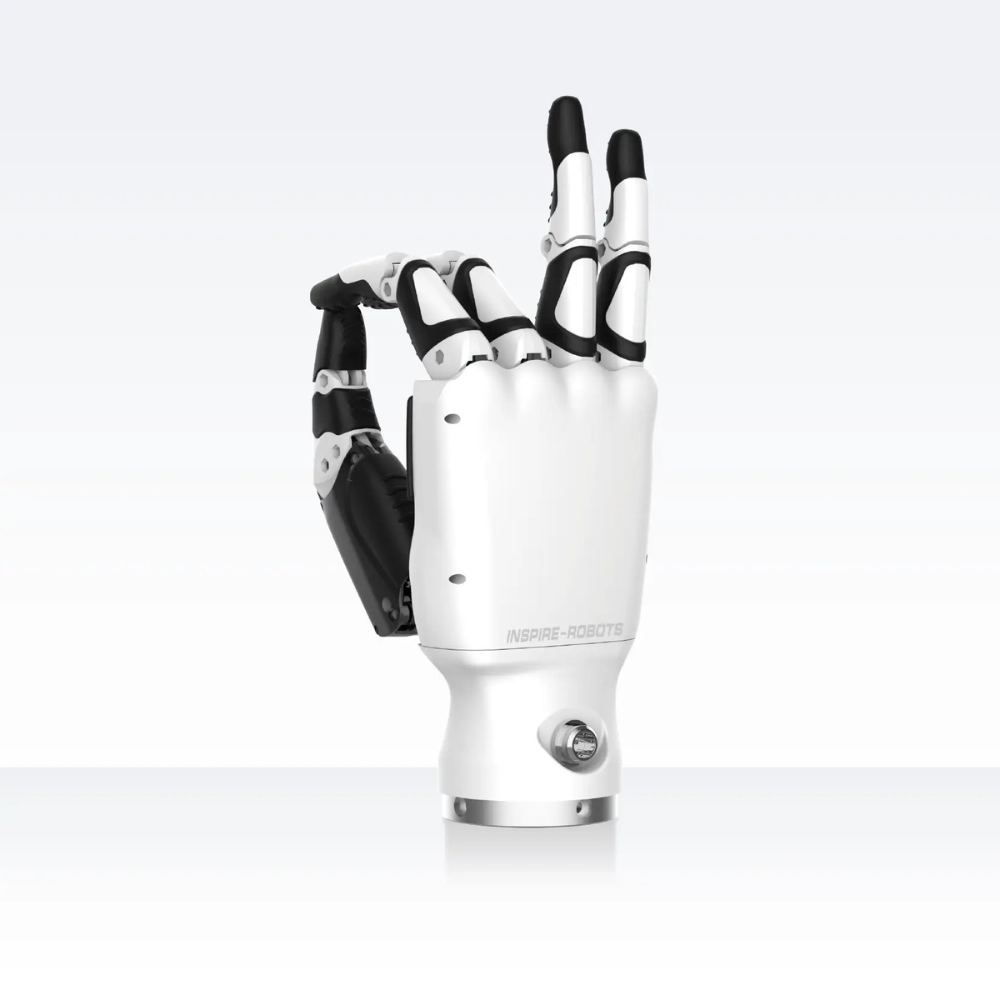
이 설명서에 대하여
| 로봇 | Inspire RH56 시리즈 다관절 손: RH56DFX · RH56BFX와 손목 모듈이 달린 RH56DFXW · RH56BFXW (6자유도 · 관절 12개, RS485) |
| 근거 문서 | Inspire-Robots The Dexterous Hand RH56 Series User Manual V1.0.9 (2024-01, PRJ-02-TS-U-001) · Wrist Module of the Dexterous Hand Instructions V0.0.2 (2024-01, PRJ-02-TS-U-004) · Inspire 웹사이트의 RH56DFX · RH56BFX 제품 페이지 (2026-11-17 수집) · Unitree 문서 센터 G1 SDK Development Guide의 「DFX Dexterous Hand」, 같은 가이드의 「Inspire FTP Dexterity Hand」(직렬 포트 권한) · 「Hand SDK Interface」(DDS 초기화) (2026-11-06 수집) |
| 소프트웨어 | Inspire-Robots The Dexterous Hands Instructions V0.0.2 (2024-01, PRJ-02-TS-U-002) · The Dexterous Hand PC Instructions V0.0.1 (2024-01, PRJ-02-TS-U-003) |
| 함께 보는 책 | Inspire RH56E2 · RH56DFTP 운용 설명서 (같은 PC 소프트웨어, 같은 RS485 프레임 형식) · WeGo Humanoid Studio 사용 가이드 · WeGo Humanoid Studio Pro 사용 가이드 (원격조작) |
| 판 | 한국어판 · 2026.11.19 |
| 문의 | go.support@wego-robotics.com |
1장과 3 ~ 7장은 Inspire 공식 사용 설명서(영문) 전체를 옮긴 것이며 (1장의 '모델' 절만 Inspire 제품 페이지), 장 순서는 WeGo 설명서 형식에 맞췄습니다 (원문 2장 '통신 프로토콜'을 4 ~ 7장으로 나눔). 원문에는 안전 수칙 장이 없어서, 2장 '중요 안전 수칙'은 Inspire의 최신 다관절 손 사용 설명서들에 실린 안전 수칙을 옮겨 넣었습니다. 8장은 Inspire의 손목 모듈 설명서를, 9장은 PC 소프트웨어 문서 두 편을, 10장은 Unitree 문서를 옮겼습니다. 10장의 Humanoid Studio 설정은 WeGo의 두 사용 가이드에서 가져왔습니다. 원문의 오류나 앞뒤가 맞지 않는 곳은 값을 고치지 않고 그 자리에 문서 오류 · 문서 차이 상자로 적었습니다.
원문 설명서는 손 모델 이름을 'RH56 시리즈'로만 적고, 성능 사양 표에서 DF · BF 두 가지를 나눕니다. Inspire 제품 페이지에 따라 DF는 RH56DFX, BF는 RH56BFX로 읽었습니다 (1장).
© WeGo Robotics (한국어 번역) · 원문 © Beijing Inspire-Robots Technology Co., Ltd. WeGo Robotics는 Inspire-Robots의 공식 파트너입니다. 표지의 RH56DFX 사진은 Inspire-Robots가 웹사이트(en.inspire-robots.com)에 올린 제품 사진을 그대로 실은 것입니다.
목차
- 01제품 개요
- 02중요 안전 수칙
- 03전기 연결과 통신 방식
- 04RS485 프로토콜
- 05Modbus RTU
- 06레지스터
- 07동작 시퀀스
- 08손목 모듈
- 09PC 소프트웨어
- 10Unitree G1 연동
제품 개요
RH56 시리즈는 작고 토크가 큰 리니어 서보 액추에이터 여섯 개로 움직이는 다섯 손가락 다관절 손입니다. RS485 포트로 손 내부 레지스터를 읽고 써서 제어합니다. 문서
주요 특징 문서
RH56 시리즈 다관절 손(이하 '손')은 부피가 작고 토크가 큰 리니어 서보 액추에이터를 통합해 설계한 기계식 다관절 손입니다. 리니어 서보 액추에이터가 여섯 개 들어 있고, 사용자 인터페이스로는 RS232 · RS485 · CAN 통신을 씁니다 (RS232와 CAN은 주문 제작 모델, 3장). 감도가 높은 압력 센서가 들어 있어, 임계값을 달리 정하면 단단한 정도가 다른 물체도 쉽게 쥘 수 있습니다.
제어 명령이 간결하고 효율적이어서 손을 빠르게 다룰 수 있으며, 성능이 뛰어나 서비스 로봇 · 교구 · 의수 같은 분야에 알맞습니다.
모델 문서
원문 설명서는 'RH56 시리즈'라는 이름만 쓰고 모델 번호를 적지 않습니다. 성능 사양 표(표 2)의 쥐는 힘만 DF · BF로 나누며, 이 값은 Inspire 제품 페이지의 RH56DFX · RH56BFX 값과 같습니다. 제품 페이지에 실린 모델은 다음과 같습니다. 이름 끝의 L은 왼손, R은 오른손이고, 이름에 W가 붙은 모델은 손목 모듈(8장)이 달린 6 + 2자유도 모델입니다.
| 항목 | RH56DFX | RH56BFX |
|---|---|---|
| 손목 없음 | RH56DFX-2L · RH56DFX-2R | RH56BFX-2L · RH56BFX-2R |
| 손목 포함 | RH56DFXW-2L · RH56DFXW-2R | RH56BFXW-2L · RH56BFXW-2R |
| 엄지 손끝 힘 · 네 손가락 손끝 힘 | 15 N · 10 N | 6 N · 4 N |
| 네 손가락 굽힘 속도 | 260°/s | 570°/s |
| 엄지 굽힘 속도 · 엄지 측면 회전 속도 | 70°/s · 107°/s | 150°/s · 235°/s |
| 무게 (손목 없음 · 손목 포함) | 540 g · 650 g | |
| 동작 전압 | DC 12 ~ 48 V | |
| 손목 요 · 피치 동작 범위 | ±27° · ±22° (손목 포함 모델, 손목 부하 토크 2 N·m, 손 무게 제외) | |
Inspire의 The Dexterous Hands Instructions(9장)는 RH56DF3-1R을 예로 듭니다.
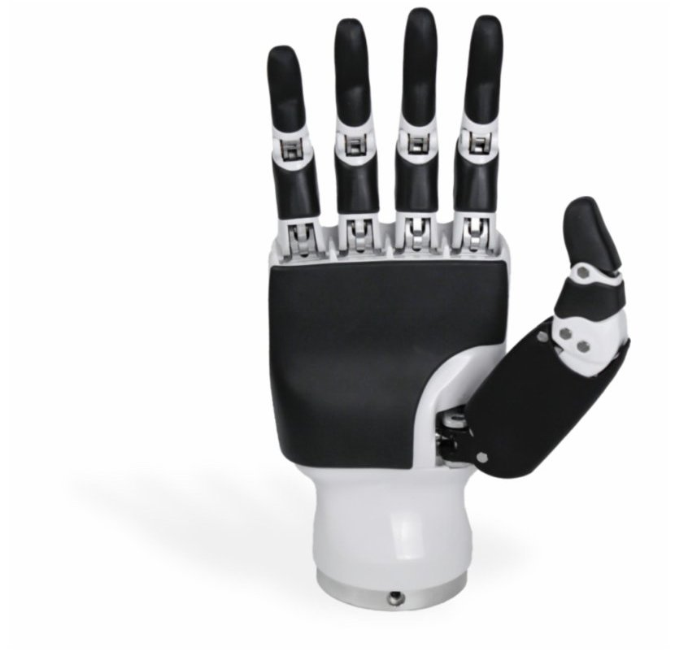
제품 페이지의 동작 전압은 DC 12 ~ 48 V, 대기 전류는 0.09 A(@24 V)이고, 사용 설명서는 동작 전압 24 V, 대기 전류 0.12 A(@24 V)로 적습니다 (표 2). 무게는 제품 페이지가 540 g, The Dexterous Hands Instructions가 500 g입니다. 전원은 받은 손의 라벨과 공급처의 안내를 따르십시오.
구조와 치수 문서
손의 구조와 치수는 다음과 같습니다.
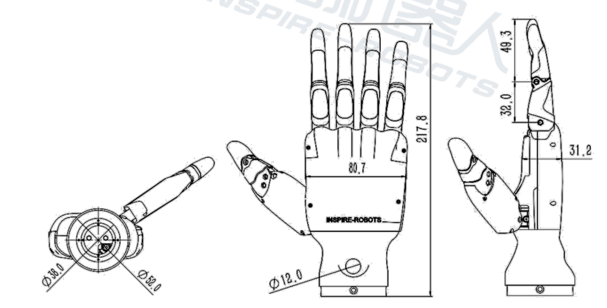
성능 사양 문서
| 항목 | 값 |
|---|---|
| 전체 관절 수 | 12 |
| 자유도 | 6 |
| 힘 센서 수 | 6 |
| 힘 센서 분해능 | 0.5 N |
| 손끝 반복 위치 정밀도 | 0.2 mm |
| 네 손가락 쥐는 힘 | DF: 10 N · BF: 4 N |
| 엄지 쥐는 힘 | DF: 15 N · BF: 6 N |
| 동작 전압 | 24 V |
| 대기 전류 | 0.12 A @ 24 V |
| 무부하 동작 평균 전류 | 0.6 A @ 24 V |
| 최대 쥐는 힘일 때 전류 | 2 A @ 24 V |
| 통신 인터페이스 | RS485 |
중요 안전 수칙
이 제품을 쓰기 전에 이 장을 꼭 읽고, 조작 · 안전 · 주의 사항을 충분히 이해한 뒤에 다루십시오. 제품은 바르게 설치하고, 안전에 최대한 주의하며 조작하십시오. 문서
제품 조작에 따르는 위험은 주로 이 장의 경고 · 주의 상자에 적혀 있습니다. 원문이 가장 높은 위험 등급으로 표시한 항목은 경고 상자 머리글에 '(위험 등급)'을 붙였습니다. 그 밖의 사항은 일반 전기 작업 수칙을 따르십시오.
안전 등급
| 표시 | 뜻 |
|---|---|
| 위험 | 정해진 절차를 지키지 않으면 사망하거나 크게 다칩니다. |
| 경고 | 정해진 절차를 지키지 않으면 사망하거나 크게 다칠 수 있습니다. |
| 주의 | 정해진 절차를 지키지 않으면 가볍게 다치거나 장치가 손상될 수 있습니다. |
- 설명을 알아보기 쉽게 하려고, 설명서의 일부 제품 그림은 덮개나 안전 가드를 뗀 모습일 수 있습니다. 제품을 조작할 때는 모든 덮개와 안전 가드를 제대로 달고, 설명서의 절차를 따르십시오.
- 설명서의 제품 그림은 설명을 위한 것이며 주문한 제품과 조금 다를 수 있습니다. 받은 실물을 기준으로 하십시오.
개봉과 인수
- 개봉했을 때 제품이나 부속품에 나사 풀림 · 손상 · 부식 같은 문제가 있으면 설치하지 마십시오.
- 개봉했을 때 제품 안에 습기가 있거나, 부품이 빠졌거나 손상되었으면 설치하지 마십시오.
- 포장 목록과 꼼꼼히 맞춰 보아 제품 이름이 다르면 설치하지 마십시오.
- 개봉하기 전에 운송 포장이 파손 · 침수 · 습기 · 변형되지 않았는지 살피십시오.
- 순서에 따라 한 겹씩 개봉하십시오. 세게 두드리지 마십시오.
- 개봉할 때 장치 외관과 모든 부속품에 물리적 손상 · 부식 · 충격 자국이 없는지 살피십시오.
- 개봉한 뒤 포장 목록과 맞춰 장치 · 부속품 · 문서가 모두 들어 있는지 확인하십시오.
위 항목에서 문제를 발견하면 곧바로 제품 공급처나 사무소에 연락하십시오.
보관과 운송
- 정해진 보관 · 운송 조건을 엄격히 지켜 제품이 손상되지 않게 하십시오.
- 물이 튀거나 비가 들이치는 곳, 직사광선, 강한 전기장 · 자기장, 심한 진동이 있는 곳에서 보관하거나 운송하지 마십시오.
- 보관 기간은 최대 3개월로 하십시오. 더 오래 보관해야 하면 보호 조치를 강화하고 필요한 점검을 하십시오.
- 차량으로 운송하기 전에 제품을 단단히 포장하십시오. 장거리 운송에는 반드시 밀폐 컨테이너를 쓰십시오.
- 제품에 영향을 주거나 제품을 손상시킬 수 있는 장치 · 물질과 함께 운송하는 것은 엄격히 금지합니다.
설치
- 설치하기 전에 제품 설명서와 안전 수칙을 끝까지 읽으십시오.
- 강한 전기장이나 전자기 간섭이 있는 곳에 설치하지 마십시오.
- 캐비닛이나 섀시 안처럼 밀폐된 곳에 설치할 때는 냉각 팬이나 에어컨 같은 냉각 장치로 충분히 식혀 환경 조건을 맞추십시오. 그러지 않으면 제품이 과열되거나 불이 날 수 있습니다.
- 제품을 개조하는 것은 엄격히 금지합니다.
- 제품의 구성품이나 부품을 고정하는 볼트를 푸는 것은 엄격히 금지합니다.
- 제품을 캐비닛이나 단말 장비에 넣을 때는 그 캐비닛이나 장비에 방화 외함 · 전기 보호 외함 · 기계 보호 외함 같은 보호 장치가 있어야 합니다. 보호 등급은 관련 IEC 표준과 현지 법규를 따라야 합니다.
- 변압기처럼 전자기 간섭이 강한 장비를 함께 설치할 때는 차폐 장치를 달아 이 제품의 오작동을 막으십시오.
- 제품은 금속처럼 불에 타지 않는 면에 설치하십시오. 가연물을 제품에서 멀리 두어 화재를 막으십시오.
설치하는 동안 제품 위를 천이나 종이로 덮어, 구멍을 뚫을 때 금속 부스러기 · 기름 · 물 같은 이물질이 제품 안에 들어가 고장 나지 않게 하십시오. 설치가 끝나면 덮개를 걷어 내십시오. 덮개가 통풍구를 막으면 열이 빠지지 않아 제품이 과열될 수 있습니다.
배선
- 제품의 설치 · 배선 · 정비 · 점검 · 부품 교체는 자격을 갖춘 사람만 하십시오.
- 배선하기 전에 관련된 모든 장치의 전원이 완전히 끊어졌는지 확인하십시오. 전원을 끊은 뒤에도 장비 안의 커패시터에는 전압이 남아 있습니다. 제품 경고 라벨에 적힌 시간 이상 기다린 뒤에 배선이나 다른 작업을 하고, 주회로의 직류 전압을 재서 안전한 전압인지 확인하십시오. 지키지 않으면 감전될 위험이 있습니다.
- 입력 전원을 장치나 제품의 신호 · 통신 단자나 출력 단자에 연결하는 것은 엄격히 금지합니다. 장치가 손상되거나 불이 날 수 있습니다.
- 제조사의 영업 · 기술 지원 담당자가 승인한 커넥터와 케이블을 쓰십시오. 규격에 맞지 않는 커넥터와 케이블은 고장을 일으킵니다.
- 배선에 쓰는 모든 케이블은 선 굵기와 차폐 요구를 지켜야 합니다. 차폐 케이블의 차폐층은 한쪽 끝을 확실히 접지하십시오.
- 장치와 제품은 제대로 접지해야 합니다. 그러지 않으면 정전기로 제품이 손상될 수 있습니다.
- 배선할 때 금속 심선이 드러나지 않게 해, 고온 산화나 단락을 막으십시오.
- 정전기 방전(ESD) 보호 절차를 지키십시오. 배선할 때는 정전기 방지 손목 밴드를 차서 장치와 제품 내부 회로가 손상되지 않게 하십시오.
- 전원 플러그와 모든 커넥터를 단단히 연결해, 접촉 불량으로 동작에 문제가 생기지 않게 하십시오.
- 제어 회로는 차폐 꼬임쌍선으로 배선하고, 차폐선을 제품의 접지 단자에 연결하십시오. 그러지 않으면 제품이 비정상적으로 동작할 수 있습니다.
전원 투입
- 전원을 넣기 전에 제품이 바르게 설치되었고 모든 배선이 단단히 연결되었는지 확인하십시오.
- 전원을 넣기 전에 전원 공급 장치가 제품 요구 사항에 맞는지 확인해, 제품 손상이나 화재를 막으십시오.
- 전원을 넣기 전에 전원 사양이 장치 정격에 맞는지 확인해, 과전압으로 손상되지 않게 하십시오.
- 배선과 파라미터 설정을 마친 뒤 시운전으로 기계가 안전하게 동작하는지 확인하십시오. 그러지 않으면 사람이 다치거나 장치가 손상될 수 있습니다.
- 전원을 넣기 전에 제품의 정격 전압이 전원 전압과 같은지 확인하십시오. 전원 전압이 틀리면 불이 날 위험이 있습니다.
이상이 생겼을 때
장치를 직접 분해하지 마십시오. 고장이 확인되거나 의심되면 구입처나 제조사의 영업 · 기술 지원 담당자에게 연락하십시오.
다음 중 하나라도 해당하면 즉시 전원을 끊고 구입처나 제조사에 연락하십시오.
- 장치 안에 물이 들어갔을 때
- 하우징이 깨졌거나 부품이 떨어져 나갔을 때
- 동작이 비정상이거나 성능이 기준에서 벗어났을 때
- 장치에서 이상한 냄새 · 연기 · 소음이 날 때
사용 종료와 폐기
- 장치와 제품은 관련 국가 규정과 표준에 따라 사용을 종료해, 재산 손실이나 인명 사고를 막으십시오.
- 사용을 끝낸 장치와 제품은 산업 폐기물 처리 기준에 따라 폐기 · 재활용해 환경 오염을 막으십시오.
전기 연결과 통신 방식
손의 전기 인터페이스는 GX12 항공 플러그 하나이며, 전원과 RS485 통신이 함께 들어갑니다. 버스에 여러 대를 달 때는 손마다 ID를 다르게 정합니다. 문서
핀 정의 문서
손의 전기 인터페이스는 GX12 규격의 표준 항공 플러그입니다. 핀 정의는 다음과 같습니다 (표 3 · 그림 3).
| 핀 | RS485 |
|---|---|
| 1 | GND |
| 2 | VCC |
| 3 | A+ |
| 4 | B- |
| 5 | GND |
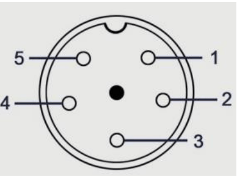
전원은 VCC(핀 2)와 GND(핀 1 · 5)에만 연결하십시오. 입력 전원을 통신 핀(A+ · B-)에 연결하면 손이 손상되거나 불이 날 수 있습니다 (2장 '배선').
통신 방식 문서
RS485 인터페이스를 쓰면 별도 변환 회로로 손 254대를 한 버스에 병렬로 연결할 수 있습니다. RS232 · CAN 인터페이스는 주문 제작 손에만 있습니다.
손의 통신 명령과 레지스터는 제품 사용자에게 공개되어 있습니다. 사용자는 위 인터페이스로 손을 PC(컨트롤러나 일반 컴퓨터)에 연결하고, PC나 임베디드 컨트롤러로 손의 파라미터 설정 · 동작 제어 같은 작업을 할 수 있습니다 (그림 4).
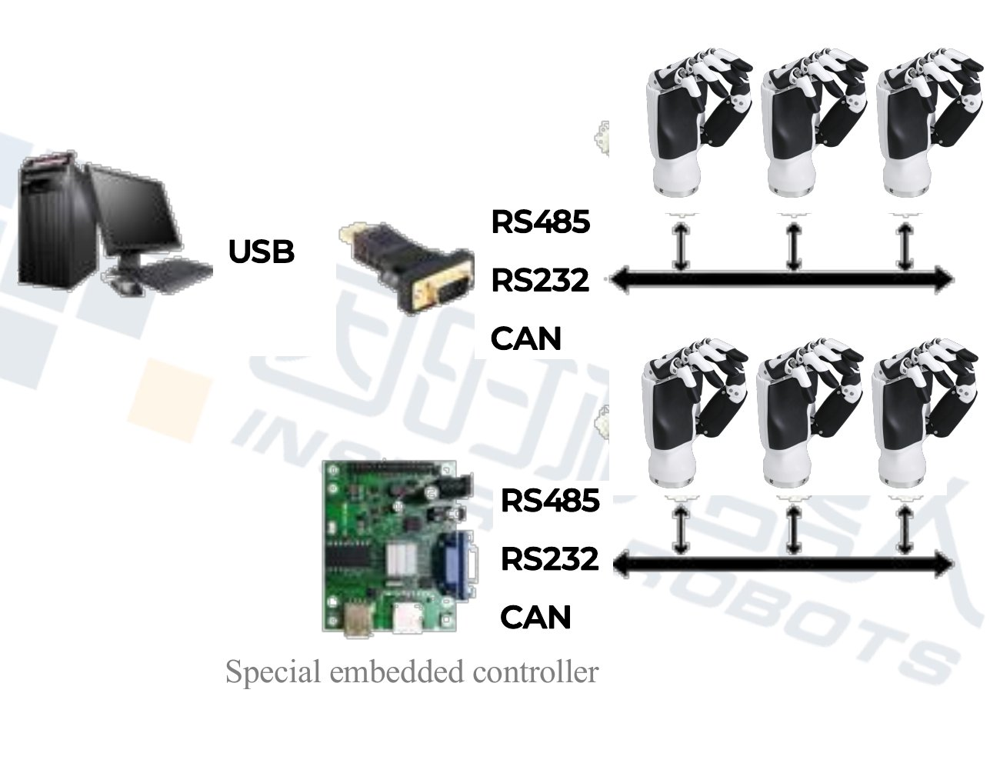
같은 버스에 연결한 손은 ID(레지스터 HAND_ID, 6장)를 서로 다르게 정해야 합니다.
RS485 프로토콜
상위 시스템은 손 내부 레지스터를 읽고 써서 손의 상태를 얻고 손을 제어합니다. RS485에서는 패킷 헤더 · 손 ID · 명령 · 주소 · 데이터 · 체크섬으로 이루어진 전용 프레임을 씁니다. 문서
통신 프로토콜 개요 문서
주 제어 장치(MCU)는 손 내부 레지스터를 읽고 써서 손의 상태를 얻고 손을 제어합니다.
- 레지스터 읽기: 상위 시스템이 손 내부 레지스터 값을 읽습니다. 그룹 단위로 읽을 수 있으며, 그룹은 주소가 이어진 여러 레지스터를 말합니다. 상위 시스템이 읽기 명령(레지스터 그룹의 시작 주소 · 길이 등)을 보내면, 손은 명령을 받아 검사하고 이상이 없으면 그 레지스터의 데이터를 상위 시스템에 돌려줍니다.
- 레지스터 쓰기: 상위 시스템이 손 내부 레지스터에 데이터를 씁니다. 그룹 단위로 쓸 수 있습니다. 상위 시스템이 쓰기 명령(레지스터 그룹의 시작 주소와 쓸 데이터)을 보내면, 손은 명령을 받아 검사하고 이상이 없으면 확인 신호를 상위 시스템에 돌려줍니다.
RS485 레지스터 읽기 · 쓰기 문서
RS485 통신 파라미터는 데이터 비트 8 · 정지 비트 1 · 패리티 없음이고, 기본 보율은 115200 bps입니다. 보율은 레지스터 REDU_RATIO(6장)로 바꿉니다.
레지스터 읽기
읽기 명령 프레임 형식은 아래와 같습니다. Address는 읽을 레지스터의 시작 주소, Hands_ID는 손 ID, Address_L은 Address의 하위 8비트, Address_H는 상위 8비트,
Register_Length는 읽을 레지스터의 길이(단위: 바이트)입니다. Checksum은 프레임 헤더를 뺀 나머지 데이터를 체크섬 바로 앞까지 모두 더한 값의 하위 바이트입니다.
| 바이트 | 값 | 설명 |
|---|---|---|
| byte[0] | 0xEB | 패킷 헤더 |
| byte[1] | 0x90 | 패킷 헤더 |
| byte[2] | Hands_ID | 손 ID |
| byte[3] | 0x04 | 프레임 데이터 길이 |
| byte[4] | 0x11 | 레지스터 읽기 플래그 |
| byte[5] | Address_L | 레지스터 시작 주소의 하위 8비트 |
| byte[6] | Address_H | 레지스터 시작 주소의 상위 8비트 |
| byte[7] | Register_Length | 읽을 레지스터 길이 |
| byte[8] | Checksum | 체크섬 |
손은 읽기 명령에 다음 응답 프레임을 돌려줍니다.
| 바이트 | 값 | 설명 |
|---|---|---|
| byte[0] | 0x90 | 패킷 헤더 |
| byte[1] | 0xEB | 패킷 헤더 |
| byte[2] | Hands_ID | 손 ID |
| byte[3] | Register_Length+3 | 프레임 데이터 길이 |
| byte[4] | 0x11 | 레지스터 읽기 명령에 대한 응답 프레임 |
| byte[5] | Address_L | 레지스터 시작 주소의 하위 8비트 |
| byte[6] | Address_H | 레지스터 시작 주소의 상위 8비트 |
| byte[7] | Data[0] | 레지스터 값 |
| … | … | |
| byte[7+Register_Length-1] | Data[Register_Length-1] | |
| byte[7+Register_Length] | Checksum | 체크섬 |
읽기 예: 자유도별 실제 각도
ID가 1인 손이 자유도별 실제 각도를 읽는 예입니다. 실제 각도는 레지스터 그룹 ANGLE_ACT(m)에 있으며, 시작 주소는 1546(0x060A), 길이는 12바이트(0x0C)입니다. 명령 프레임은 다음과 같습니다.
| 바이트 | 값 | 설명 |
|---|---|---|
| byte[0] | 0xEB | 패킷 헤더 |
| byte[1] | 0x90 | 패킷 헤더 |
| byte[2] | 0x01 | 손 ID: 1 |
| byte[3] | 0x04 | 프레임 데이터 길이 |
| byte[4] | 0x11 | 레지스터 읽기 플래그 |
| byte[5] | 0x0A | 레지스터 시작 주소의 하위 8비트 |
| byte[6] | 0x06 | 레지스터 시작 주소의 상위 8비트 |
| byte[7] | 0x0C | 읽을 레지스터 길이 |
| byte[8] | 0x32 | 체크섬 |
손은 이 명령에 다음 응답 프레임을 돌려줍니다.
| 바이트 | 값 | 설명 |
|---|---|---|
| byte[0] | 0x90 | 패킷 헤더 |
| byte[1] | 0xEB | 패킷 헤더 |
| byte[2] | 0x01 | 손 ID |
| byte[3] | 0x0F | 프레임 데이터 길이: 12 + 3 |
| byte[4] | 0x11 | 레지스터 읽기 명령에 대한 응답 프레임 |
| byte[5] | 0x0A | 레지스터 시작 주소의 하위 8비트 |
| byte[6] | 0x06 | 레지스터 시작 주소의 상위 8비트 |
| byte[7] · byte[8] | 0x6400 | 정수 100 (0x0064) |
| byte[9] · byte[10] | 0x6400 | 정수 100 (0x0064) |
| byte[11] · byte[12] | 0x6400 | 정수 100 (0x0064) |
| byte[13] · byte[14] | 0x6400 | 정수 100 (0x0064) |
| byte[15] · byte[16] | 0xE803 | 정수 1000 (0x03E8) |
| byte[17] · byte[18] | 0x0000 | 정수 0 (0x0000) |
| byte[19] | 0xAC | 체크섬 |
이 응답에서 자유도별 실제 값 100, 100, 100, 100, 1000, 0을 얻습니다. 표의 '0x6400'은 바이트 두 개(0x64, 0x00)를 보내는 순서대로 이어 적은 것으로, 하위 바이트가 먼저 옵니다. 주고받는 바이트를 차례로 적으면 다음과 같습니다.
# 보냄: 실제 각도 읽기 (ID 1, 주소 0x060A, 12바이트) EB 90 01 04 11 0A 06 0C 32 # 받음: 100, 100, 100, 100, 1000, 0 90 EB 01 0F 11 0A 06 64 00 64 00 64 00 64 00 E8 03 00 00 AC
레지스터 쓰기
쓰기 명령 프레임 형식은 아래와 같습니다. Data[0] ~ Data[Register_Length-1]이 레지스터에 쓸 데이터입니다.
| 바이트 | 값 | 설명 |
|---|---|---|
| byte[0] | 0xEB | 패킷 헤더 |
| byte[1] | 0x90 | 패킷 헤더 |
| byte[2] | Hands_ID | 손 ID |
| byte[3] | Register_Length+3 | 프레임 데이터 길이 |
| byte[4] | 0x12 | 레지스터 쓰기 명령 플래그 |
| byte[5] | Address_L | 레지스터 시작 주소의 하위 8비트 |
| byte[6] | Address_H | 레지스터 시작 주소의 상위 8비트 |
| byte[7] | Data[0] | 레지스터에 쓸 데이터 |
| … | … | |
| byte[7+Register_Length-1] | Data[Register_Length-1] | |
| byte[7+Register_Length] | checksum | 체크섬 |
손은 쓰기 명령에 다음 응답 프레임을 돌려줍니다.
| 바이트 | 값 | 설명 |
|---|---|---|
| byte[0] | 0x90 | 패킷 헤더 |
| byte[1] | 0xEB | 패킷 헤더 |
| byte[2] | Hands_ID | 손 ID |
| byte[3] | 4 | 프레임 데이터 길이 |
| byte[4] | 0x12 | 레지스터 쓰기 명령에 대한 응답 프레임 |
| byte[5] | Address_L | 레지스터 시작 주소의 하위 8비트 |
| byte[6] | Address_H | 레지스터 시작 주소의 상위 8비트 |
| byte[7] | 1 | |
| byte[8] | checksum | 체크섬 |
쓰기 예: 자유도별 각도 설정
ID가 1인 손의 자유도별 각도를 100, 100, 100, 100, 1000, 0으로 정하는 예입니다. 레지스터 그룹 ANGLE_SET(m)의 값을 바꿔야 하며, 이 그룹의 시작 주소는 1486(0x05CE), 길이는 12바이트(0x0C)입니다. 보낼 명령은 다음과 같습니다.
| 바이트 | 값 | 설명 |
|---|---|---|
| byte[0] | 0xEB | 패킷 헤더 |
| byte[1] | 0x90 | 패킷 헤더 |
| byte[2] | 0x01 | 손 ID |
| byte[3] | 0x0F | 프레임 데이터 길이: 12 + 3 |
| byte[4] | 0x12 | 레지스터 쓰기 명령 플래그 |
| byte[5] | 0xCE | 레지스터 시작 주소의 하위 8비트 |
| byte[6] | 0x05 | 레지스터 시작 주소의 상위 8비트 |
| byte[7] · byte[8] | 0x6400 | 정수 100 (0x0064) |
| byte[9] · byte[10] | 0x6400 | 정수 100 (0x0064) |
| byte[11] · byte[12] | 0x6400 | 정수 100 (0x0064) |
| byte[13] · byte[14] | 0x6400 | 정수 100 (0x0064) |
| byte[15] · byte[16] | 0xE803 | 정수 1000 (0x03E8) |
| byte[17] · byte[18] | 0x0000 | 정수 0 (0x0000) |
| byte[19] | 0x70 | 체크섬 |
손은 이 명령에 다음 응답 프레임을 돌려줍니다.
| 바이트 | 값 | 설명 |
|---|---|---|
| byte[0] | 0x90 | 패킷 헤더 |
| byte[1] | 0xEB | 패킷 헤더 |
| byte[2] | 0x01 | 손 ID |
| byte[3] | 0x04 | 프레임 데이터 길이 |
| byte[4] | 0x12 | 레지스터 쓰기 명령에 대한 응답 프레임 |
| byte[5] | 0xCE | 레지스터 시작 주소의 하위 8비트 |
| byte[6] | 0x05 | 레지스터 시작 주소의 상위 8비트 |
| byte[7] | 0x01 | |
| byte[8] | 0xEB | 체크섬 |
# 보냄: 각도 설정 (ID 1, 주소 0x05CE, 12바이트) = 100, 100, 100, 100, 1000, 0 EB 90 01 0F 12 CE 05 64 00 64 00 64 00 64 00 E8 03 00 00 70 # 받음 90 EB 01 04 12 CE 05 01 EB
체크섬은 byte[2]부터 체크섬 바로 앞 바이트까지 더한 값의 하위 8비트입니다. 위 읽기 명령은 0x01 + 0x04 + 0x11 + 0x0A + 0x06 + 0x0C = 0x32입니다. 이 장의 네 예는 모두 이 계산과 맞습니다.
Modbus RTU
손은 Modbus 기능 코드 0x03(보유 레지스터 읽기) · 0x06(단일 레지스터 프리셋) · 0x10(다중 레지스터 프리셋)을 지원합니다. 문서
Modbus 프로토콜 개요 문서
Modbus 프로토콜은 마스터-슬레이브 요청 · 응답 방식으로 통신합니다. 프로토콜 프레임은 기능 코드 · 데이터 필드 · 순환 중복 검사(CRC)로 이루어집니다. 이 시리즈는 보유 레지스터 읽기(기능 코드 0x03) · 단일 레지스터 프리셋(0x06) · 다중 레지스터 프리셋(0x10)을 지원합니다.
아래 표와 설명은 원문을 그대로 옮긴 것입니다. 원문에서 앞뒤가 맞지 않는 곳은 이 장 끝의 상자에 모았습니다.
보유 레지스터 읽기 (0x03) 문서
| 필드 | 값 |
|---|---|
| 슬레이브 국 주소 | 0x11 |
| 기능 코드 | 0x03 |
| 시작 레지스터 (상위 바이트) | 0x6B |
| 시작 레지스터 (하위 바이트) | 0x00 |
| 레지스터 수 (상위 바이트) | 0x00 |
| 레지스터 수 (하위 바이트) | 0x02 |
| CRC | XXXX |
| 필드 | 값 |
|---|---|
| 슬레이브 국 주소 | 0x01 |
| 기능 코드 | 0x03 |
| 바이트 수 | 0x04 |
| 0x006B 레지스터 (상위 바이트) | 0x00 |
| 0x006B 레지스터 (하위 바이트) | 0x01 |
| 0x006C 레지스터 (상위 바이트) | 0x00 |
| 0x006C 레지스터 (하위 바이트) | 0x02 |
| CRC | XXXX |
질의: 슬레이브 국 17번(0x11)의 보유 레지스터를 읽습니다. 시작 주소는 0x006B, 레지스터 수는 0x0002, 끝 주소는 0x006B+2-1=0x006C입니다. 즉 슬레이브 국 17번의 보유 레지스터 0x006B ~ 0x006C 두 개를 읽습니다.
응답: 슬레이브 국 17번(0x11)의 보유 레지스터 0x006B ~ 0x006C 두 개의 값을 돌려줍니다. 0x006B 레지스터 값은 0x0001, 0x0062 레지스터 값은 0x0002입니다.
단일 레지스터 프리셋 (0x06) 문서
| 필드 | 값 |
|---|---|
| 슬레이브 국 주소 | 0x11 |
| 기능 코드 | 0x06 |
| 시작 레지스터 (상위 바이트) | 0x00 |
| 시작 레지스터 (하위 바이트) | 0x6B |
| 데이터 내용 (상위 바이트) | 0x10 |
| 데이터 내용 (하위 바이트) | 0x00 |
| CRC | XXXX |
| 필드 | 값 |
|---|---|
| 슬레이브 국 주소 | 0x11 |
| 기능 코드 | 0x06 |
| 시작 레지스터 (상위 바이트) | 0x00 |
| 시작 레지스터 (하위 바이트) | 0x00 |
| 데이터 내용 (상위 바이트) | 0x00 |
| 데이터 내용 (하위 바이트) | 0x00 |
| CRC | XXXX |
질의: 슬레이브 국 17번(0x11)의 보유 레지스터를 설정합니다. 레지스터 주소는 0x006B, 데이터 내용은 0x1000입니다.
다중 레지스터 프리셋 (0x10) 문서
| 필드 | 값 |
|---|---|
| 슬레이브 국 주소 | 0x11 |
| 기능 코드 | 0x10 |
| 시작 레지스터 (상위 바이트) | 0x00 |
| 시작 레지스터 (하위 바이트) | 0x01 |
| 레지스터 수 (상위 바이트) | 0x00 |
| 레지스터 수 (하위 바이트) | 0x02 |
| 바이트 수 | 0x04 |
| 데이터 (상위 바이트) | 0x00 |
| 데이터 (하위 바이트) | 0x0A |
| 데이터 (상위 바이트) | 0x01 |
| 데이터 (하위 바이트) | 0x02 |
| CRC | XXXX |
| 필드 | 값 |
|---|---|
| 슬레이브 국 주소 | 0x11 |
| 기능 코드 | 0x10 |
| 시작 레지스터 (상위 바이트) | 0x00 |
| 시작 레지스터 (하위 바이트) | 0x01 |
| 레지스터 수 (상위 바이트) | 0x00 |
| 레지스터 수 (하위 바이트) | 0x02 |
| CRC | XXXX |
질의: 슬레이브 국 17번(0x11)의 보유 레지스터를 설정합니다. 레지스터 시작 주소는 0x0001, 레지스터 수는 0x0002, 데이터 내용의 바이트 수는 0x04이고, 데이터 내용은 0x000A와 0x0102입니다.
# 원문 표의 바이트 (CRC는 원문에 XXXX로 비어 있음) 11 03 6B 00 00 02 CRC # 0x03 질의 01 03 04 00 01 00 02 CRC # 0x03 응답 11 06 00 6B 10 00 CRC # 0x06 질의 11 06 00 00 00 00 CRC # 0x06 응답 11 10 00 01 00 02 04 00 0A 01 02 CRC # 0x10 질의 11 10 00 01 00 02 CRC # 0x10 응답
- 0x03 질의(표 12): 시작 주소가 0x006B인데 상위 바이트 칸이 0x6B, 하위 바이트 칸이 0x00입니다. Modbus 규격대로라면 상위 0x00, 하위 0x6B입니다.
- 0x03 응답(표 13): 슬레이브 국 주소가 0x01인데 설명은 17번(0x11)입니다. 설명의 '0x0062 레지스터'는 0x006C여야 합니다.
- 0x06 응답(표 15): 주소와 값이 모두 0x00입니다. Modbus 규격의 0x06 응답은 질의의 주소(0x006B)와 값(0x1000)을 그대로 돌려줍니다.
원문은 Modbus RTU를 쓰는 인터페이스와 통신 파라미터, 4장의 전용 프레임과 Modbus RTU 사이를 전환하는 방법, 6장의 레지스터 주소가 Modbus 보유 레지스터 주소와 어떻게 대응하는지를 적지 않습니다. 위 예의 주소(0x006B, 0x0001)는 손의 레지스터 목록(6장)에 없는 주소입니다.
레지스터
이 장은 사용자에게 공개된 손의 레지스터와 각 레지스터의 뜻 · 범위를 다룹니다. 이름에 (m)이 붙은 레지스터 그룹은 레지스터 여섯 개로 이루어지며, m = 0 ~ 5는 어느 그룹에서나 차례로 새끼손가락 · 약지 · 중지 · 검지 · 엄지 굽힘 · 엄지 회전입니다. 문서
레지스터 목록 문서
여러 바이트 값(short)은 하위 바이트가 먼저 옵니다 (4장 예). 권한 W/R은 읽기 · 쓰기, R은 읽기 전용입니다.
| 주소 | 약어 | 뜻 | 길이 | 권한 |
|---|---|---|---|---|
| 1000 (0x03E8) | HAND_ID | ID | 1 byte | W/R |
| 1002 (0x03EA) | REDU_RATIO | 보율 설정 | 1 byte | W/R |
| 1004 (0x03EC) | CLEAR_ERROR | 오류 해제 | 1 byte | W/R |
| 1005 (0x03ED) | SAVE | Flash에 데이터 저장 | 1 byte | W/R |
| 1006 (0x03EE) | RESET_PARA | 공장 기본값 복원 | 1 byte | W/R |
| 1008 (0x03F0) | reserve | 예약 | 1 byte | W/R |
| 1009 (0x03F1) | GESTURE_FORCE_CLB | 힘 센서 보정 | 1 byte | W/R |
| 1020 (0x03FC) | CURRENT_LIMIT(m) | 자유도별 액추에이터 전류 보호값 | 6 short (12 byte) | W/R |
| 1032 (0x0408) | DEFAULT_SPEED_SET(m) | 자유도별 전원 투입 속도 설정값 | 6 short (12 byte) | W/R |
| 1044 (0x0414) | DEFAULT_FORCE_SET(m) | 자유도별 전원 투입 힘 제어 임계값 설정값 | 6 short (12 byte) | W/R |
| 1472 (0x05C0) | VLTAGE | 시스템 전압 | 1 short | R |
| 1474 (0x05C2) | POS_SET(m) | 자유도별 액추에이터 위치 설정값 | 6 short (12 byte) | W/R |
| 1486 (0x05CE) | ANGLE_SET(m) | 자유도별 각도 설정값 | 6 short (12 byte) | W/R |
| 1498 (0x05DA) | FORCE_SET(m) | 자유도별 힘 제어 임계값 설정값 | 6 short (12 byte) | W/R |
| 1522 (0x05F2) | SPEED_SET(m) | 자유도별 속도 설정값 | 6 short (12 byte) | W/R |
| 1534 (0x05FE) | POS_ACT(m) | 자유도별 액추에이터 실제 위치 | 6 short (12 byte) | R |
| 1546 (0x060A) | ANGLE_ACT(m) | 자유도별 실제 각도 | 6 short (12 byte) | R |
| 1582 (0x062E) | FORCE_ACT(m) | 손가락별 실제 힘 | 6 short (12 byte) | R |
| 1594 (0x063A) | CURRENT(m) | 자유도별 액추에이터 전류 | 6 short (12 byte) | R |
| 1606 (0x0646) | ERROR(m) | 자유도별 액추에이터 오류 코드 | 6 byte | R |
| 1612 (0x064C) | STATUS(m) | 자유도별 상태 정보 | 6 byte | R |
| 1618 (0x0652) | TEMP(m) | 자유도별 액추에이터 온도 | 6 byte | R |
| 2000 (0x07D0) | ACTION_SEQ_CHECKDATA1 | 현재 동작 시퀀스 확인 코드 1 | 1 byte | W/R |
| 2001 (0x07D1) | ACTION_SEQ_CHECKDATA2 | 현재 동작 시퀀스 확인 코드 2 | 1 byte | W/R |
| 2002 (0x07D2) | ACTION_SEQ_STEPNUM | 현재 동작 시퀀스의 전체 단계 수 | 1 byte | W/R |
| 2016 (0x07E0) | ACTION_SEQ_STEP(0) | 현재 동작 시퀀스 설정: 0단계 | 19 short (38 byte) | W/R |
| 2054 (0x0806) | ACTION_SEQ_STEP(1) | 현재 동작 시퀀스 설정: 1단계 | 19 short (38 byte) | W/R |
| 2092 (0x082C) | ACTION_SEQ_STEP(2) | 현재 동작 시퀀스 설정: 2단계 | 19 short (38 byte) | W/R |
| 2130 (0x0852) | ACTION_SEQ_STEP(3) | 현재 동작 시퀀스 설정: 3단계 | 19 short (38 byte) | W/R |
| 2168 (0x0878) | ACTION_SEQ_STEP(4) | 현재 동작 시퀀스 설정: 4단계 | 19 short (38 byte) | W/R |
| 2206 (0x089E) | ACTION_SEQ_STEP(5) | 현재 동작 시퀀스 설정: 5단계 | 19 short (38 byte) | W/R |
| 2244 (0x08C4) | ACTION_SEQ_STEP(6) | 현재 동작 시퀀스 설정: 6단계 | 19 short (38 byte) | W/R |
| 2282 (0x08EA) | ACTION_SEQ_STEP(7) | 현재 동작 시퀀스 설정: 7단계 | 19 short (38 byte) | W/R |
| 2320 (0x0910) | ACTION_SEQ_INDEX | 현재 동작 시퀀스 인덱스 번호 | 1 byte | W/R |
| 2321 (0x0911) | SAVE_ACTION_SEQ | 현재 동작 시퀀스 저장 | 1 byte | W/R |
| 2322 (0x0912) | ACTION_SEQ _RUN | 현재 동작 시퀀스 실행 | 1 byte | W/R |
| 2324 (0x0914) | ACTION_ADJUST_FORCE_SET | 동작 시퀀스의 힘 제어 조정값 | 2 byte | W/R |
- 1472 시스템 전압의 약어는 원문에
VLTAGE로 적혀 있습니다 (VOLTAGE의 오타로 보임). 이 레지스터와 1008reserve, 2324ACTION_ADJUST_FORCE_SET은 목록에만 있고 설명 절이 없습니다. - 2322의 약어는 원문 그대로
ACTION_SEQ _RUN(밑줄 앞에 빈칸)으로 적었습니다. 7장의 절차에도 같은 꼴로 나옵니다.
시스템 설정 문서
HAND_ID · 손 ID (1000)
기본값 1, 범위 1 ~ 254이며 저장할 수 있습니다. 한 버스에 손 여러 대를 연결할 때는 손마다 ID를 다르게 정해야 합니다.
REDU_RATIO · 보율 설정 (1002)
기본값 0, 범위 0 ~ 2이며 저장할 수 있습니다.
| 값 | 보율 |
|---|---|
| 0 | 115200 |
| 1 | 57600 |
| 2 | 19200 |
CLEAR_ERROR · 오류 해제 (1004)
기본값 0, 범위 0 ~ 1이며 저장되지 않습니다. 1을 쓰면 손에서 해제할 수 있는 오류(구속 · 과전류 · 동작 이상 · 통신 오류 같은 액추에이터 오류)를 해제합니다.
액추에이터 과열 오류는 해제할 수 없습니다. 온도가 내려가면 저절로 해제됩니다.
SAVE · Flash에 파라미터 저장 (1005)
기본값 0, 범위 0 ~ 1이며 저장되지 않습니다. 1을 쓰면 손이 현재 파라미터를 Flash에 씁니다. 저장한 파라미터는 전원이 꺼져도 사라지지 않습니다.
RESET_PARA · 공장 기본값 복원 (1006)
기본값 0, 범위 0 ~ 1이며 저장되지 않습니다. 1을 쓰면 손의 파라미터가 공장 기본값으로 돌아갑니다.
GESTURE_FORCE_CLB · 힘 센서 보정 (1009)
이 파라미터를 1로 정하면 손이 힘 센서 보정을 시작합니다. 보정에는 6초가 걸립니다. 손은 먼저 다섯 손가락을 완전히 펴고, 네 손가락(새끼손가락 · 약지 · 중지 · 검지)을 굽힌 뒤, 네 손가락을 편 채로 엄지를 굽히고, 마지막으로 엄지를 폅니다.
보정하는 동안에는 손을 무부하 상태로 두십시오. 손가락이 어떤 물체에도 닿지 않게 하십시오.
보호값과 전원 투입 설정값 문서
CURRENT_LIMIT(m) · 자유도별 액추에이터 전류 보호값 (1020 ~ 1031)
이 그룹은 레지스터 여섯 개로 이루어지며, 손의 6자유도별 전류 보호값을 하나씩 담습니다. 손가락이 움직이는 동안 전류가 이 값을 넘으면 손가락이 멈추고,
손가락 상태 레지스터 STATUS(m)에 전류 보호로 멈췄다고 표시됩니다. 이 파라미터는 저장할 수 있으며, 저장한 값은 전원을 꺼도 유지됩니다. 단위는 mA입니다.
| 주소 | 이름 | 설명 | 자료형 | 범위 |
|---|---|---|---|---|
| 1020-1021 | CURRENT_LIMIT(0) | 새끼손가락 전류 보호값 | short | 0 ~ 1500 |
| 1022-1023 | CURRENT_LIMIT(1) | 약지 전류 보호값 | short | 0 ~ 1500 |
| 1024-1025 | CURRENT_LIMIT(2) | 중지 전류 보호값 | short | 0 ~ 1500 |
| 1026-1027 | CURRENT_LIMIT(3) | 검지 전류 보호값 | short | 0 ~ 1500 |
| 1028-1029 | CURRENT_LIMIT(4) | 엄지 굽힘 전류 보호값 | short | 0 ~ 1500 |
| 1030-1031 | CURRENT_LIMIT(5) | 엄지 회전 전류 보호값 | short | 0 ~ 1500 |
DEFAULT_SPEED_SET(m) · 자유도별 전원 투입 속도 설정값 (1032 ~ 1043)
이 그룹은 레지스터 여섯 개로 이루어지며, 손의 6자유도별 전원 투입 속도 설정값을 하나씩 담습니다. 이 파라미터는 저장할 수 있으며, 저장한 값은 전원을 꺼도 유지됩니다. 범위 값에는 단위가 없습니다.
| 주소 | 이름 | 설명 | 자료형 | 범위 |
|---|---|---|---|---|
| 1032-1033 | DEFAULT_SPEED_SET(0) | 새끼손가락 초기 전원 투입 속도 | short | 0 ~ 1000 |
| 1034-1035 | DEFAULT_SPEED_SET(1) | 약지 초기 전원 투입 속도 | short | 0 ~ 1000 |
| 1036-1037 | DEFAULT_SPEED_SET(2) | 중지 초기 전원 투입 속도 | short | 0 ~ 1000 |
| 1038-1039 | DEFAULT_SPEED_SET(3) | 검지 초기 전원 투입 속도 | short | 0 ~ 1000 |
| 1040-1041 | DEFAULT_SPEED_SET(4) | 엄지 굽힘 초기 전원 투입 속도 | short | 0 ~ 1000 |
| 1042-1043 | DEFAULT_SPEED_SET(5) | 엄지 회전 초기 전원 투입 속도 | short | 0 ~ 1000 |
속도 1000은 부하가 없는 손가락이 큰 각도에서 최소 각도까지 움직이는 데 800 ms가 걸린다는 뜻입니다. 부하가 크면 실제 속도는 이보다 조금 느립니다.
DEFAULT_FORCE_SET(m) · 자유도별 전원 투입 힘 제어 임계값 설정값 (1044 ~ 1055)
이 그룹은 레지스터 여섯 개로 이루어지며, 손의 6자유도별 전원 투입 힘 제어 임계값 설정값을 하나씩 담습니다. 이 파라미터는 저장할 수 있으며, 저장한 값은 전원을 꺼도 유지됩니다. 단위는 g입니다.
| 주소 | 이름 | 설명 | 자료형 | 범위 |
|---|---|---|---|---|
| 1044-1045 | DEFAULT_FORCE_SET(0) | 새끼손가락 초기 전원 투입 힘 제어 | short | 0 ~ 1000 |
| 1046-1047 | DEFAULT_FORCE_SET(1) | 약지 초기 전원 투입 힘 제어 | short | 0 ~ 1000 |
| 1048-1049 | DEFAULT_FORCE_SET(2) | 중지 초기 전원 투입 힘 제어 | short | 0 ~ 1000 |
| 1050-1051 | DEFAULT_FORCE_SET(3) | 검지 초기 전원 투입 힘 제어 | short | 0 ~ 1000 |
| 1052-1053 | DEFAULT_FORCE_SET(4) | 엄지 굽힘 초기 전원 투입 힘 제어 | short | 0 ~ 1500 |
| 1054-1055 | DEFAULT_FORCE_SET(5) | 엄지 회전 초기 전원 투입 힘 제어 | short | 0 ~ 1000 |
이 레지스터 값은 그 손가락 끝이 내는 쥐는 힘입니다. 예를 들어 DEFAULT_FORCE_SET(1)을 800으로 정하면 약지 끝이 800 g의 쥐는 힘을 낼 수 있다는 뜻입니다.
(물체에 닿는 부분이 손가락 끝이 아니면 낼 수 있는 쥐는 힘이 달라집니다. 힘의 크기는 힘의 팔 길이와 관계가 있어, 힘의 팔이 짧을수록 쥐는 힘이 커집니다.)
DEFAULT_FORCE_SET(4)(엄지 굽힘)만 범위가 0 ~ 1500이고, 같은 자유도의 FORCE_SET(4)와 FORCE_ACT(4)는 0 ~ 1000입니다. 원문 그대로 옮겼습니다.
동작 설정값 문서
POS_SET(m) · 자유도별 액추에이터 위치 설정값 (1474 ~ 1485)
이 그룹은 레지스터 여섯 개로 이루어지며, 손의 6자유도별 액추에이터 위치 설정값을 하나씩 담습니다. 이 파라미터는 저장할 수 없습니다. 범위 값에는 단위가 없습니다.
| 주소 | 이름 | 설명 | 자료형 | 범위 |
|---|---|---|---|---|
| 1474-1475 | POS_SET(0) | 새끼손가락 액추에이터 위치 설정 | short | 0 ~ 2000 |
| 1476-1477 | POS_SET(1) | 약지 액추에이터 위치 설정 | short | 0 ~ 2000 |
| 1478-1479 | POS_SET(2) | 중지 액추에이터 위치 설정 | short | 0 ~ 2000 |
| 1480-1481 | POS_SET(3) | 검지 액추에이터 위치 설정 | short | 0 ~ 2000 |
| 1482-1483 | POS_SET(4) | 엄지 굽힘 액추에이터 위치 설정 | short | 0 ~ 2000 |
| 1484-1485 | POS_SET(5) | 엄지 회전 액추에이터 위치 설정 | short | 0 ~ 2000 |
- 0: 액추에이터 최소 스트로크로, 손가락 최대 각도(손가락을 편 상태)에 해당합니다.
- 2000: 액추에이터 최대 스트로크로, 손가락 최소 각도(손가락을 굽힌 상태)에 해당합니다.
- −1: 액추에이터가 움직이지 않습니다.
이 레지스터 그룹으로 손가락의 위치 각도를 정하는 것은 권장하지 않습니다.
ANGLE_SET(m) · 자유도별 각도 설정값 (1486 ~ 1497)
이 그룹은 레지스터 여섯 개로 이루어지며, 손의 6자유도별 각도 설정값을 하나씩 담습니다. 이 파라미터는 저장할 수 있으며, 저장한 값은 전원을 꺼도 유지됩니다. 범위 값에는 단위가 없습니다. 어느 자유도의 각도 값을 0 ~ 1000 안의 값으로 정하면 그 손가락이 곧바로 움직입니다. −1로 정하면 그 손가락은 반응하지 않습니다.
예를 들어 레지스터 여섯 개(ANGLE_SET(0) ~ ANGLE_SET(5))의 각도 값을 차례로 500, 500, −1, 0, 500, 500으로 정하면 새끼손가락 · 약지 · 엄지 굽힘 · 엄지 회전의 네 자유도가 '500'에 해당하는 각도로 움직입니다.
검지는 '0'에 해당하는 각도로 움직이고, 중지는 움직이지 않고 지금 위치를 그대로 유지합니다.
| 주소 | 이름 | 설명 | 자료형 | 범위 |
|---|---|---|---|---|
| 1486-1487 | ANGLE_SET(0) | 새끼손가락 각도 설정값 | short | −1, 0 ~ 1000 |
| 1488-1489 | ANGLE_SET(1) | 약지 각도 설정값 | short | −1, 0 ~ 1000 |
| 1490-1491 | ANGLE_SET(2) | 중지 각도 설정값 | short | −1, 0 ~ 1000 |
| 1492-1493 | ANGLE_SET(3) | 검지 각도 설정값 | short | −1, 0 ~ 1000 |
| 1494-1495 | ANGLE_SET(4) | 엄지 굽힘 각도 설정값 | short | −1, 0 ~ 1000 |
| 1496-1497 | ANGLE_SET(5) | 엄지 회전 각도 설정값 | short | 0 ~ 1000 |
- 원문 표는 이 그룹의 설명을 모두 'Initial power-on angle of …'(초기 전원 투입 각도)로 적었습니다. 목록과 절 제목에 따라 각도 설정값으로 옮겼습니다.
ANGLE_SET(5)(엄지 회전)만 범위에 −1이 없습니다 (0 ~ 1000). 본문은 어느 자유도든 −1이면 반응하지 않는다고 적습니다.
각 자유도 각도의 정의와 동작 범위는 다음과 같습니다. 그림의 Metacarpal plane은 중수골 평면, Rotation axis of the thumb은 엄지 회전축, 'Parallel to the rotation axis of the'(그림에서 끝 낱말 thumb이 잘림)는 엄지 회전축과 평행한 선입니다.
| 각도 | 그림 | 범위 |
|---|---|---|
| 새끼손가락 · 약지 · 중지 · 검지 | 각 α (P1 · P2, 중수골 평면 기준) · 그림 5 | 19° ~ 176.7° |
| 엄지 굽힘 각도 | 각 θ (P5 · P6, 엄지 회전축과 평행한 선 기준) · 그림 6 | −13° ~ 53.6° |
| 엄지 회전 각도 | 각 β (P4, 중수골 평면 기준) · 그림 7 | 90° ~ 165° |
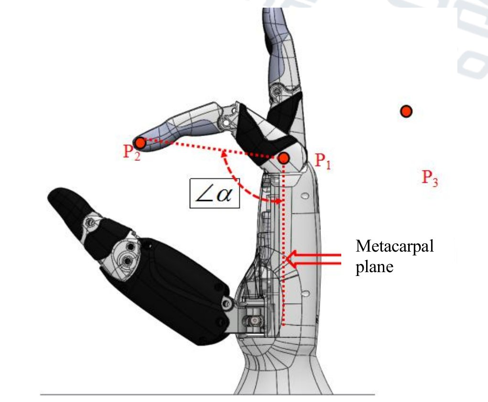
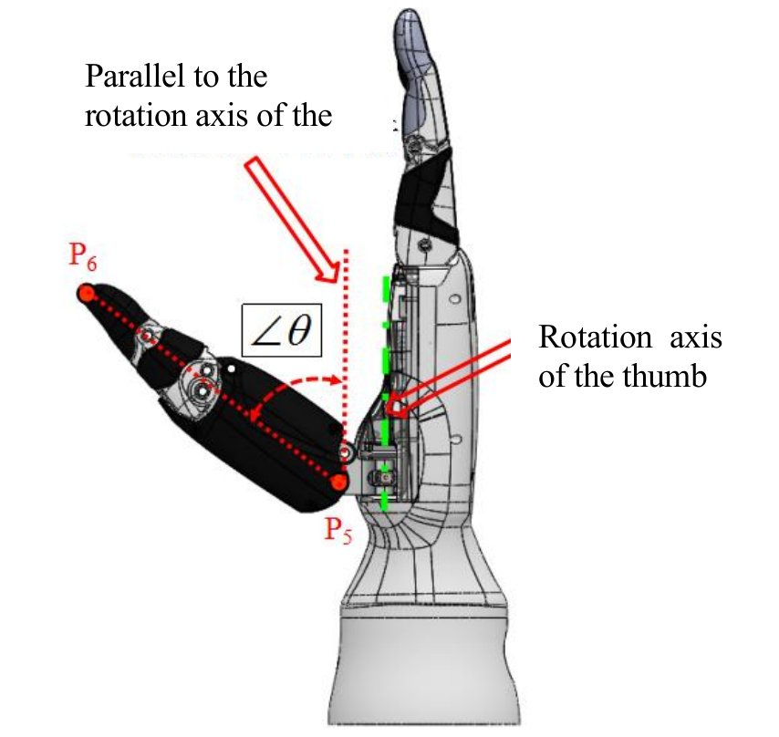
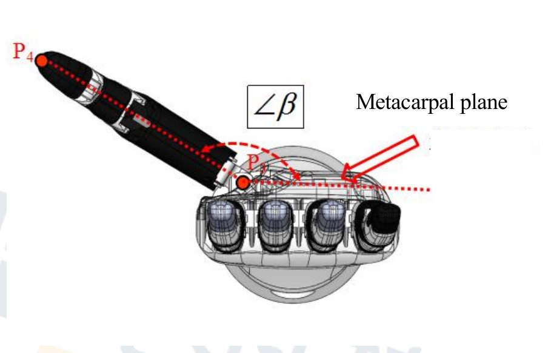
FORCE_SET(m) · 자유도별 힘 제어 임계값 설정값 (1498 ~ 1509)
이 그룹은 레지스터 여섯 개로 이루어지며, 손의 6자유도별 힘 제어 임계값 설정값을 하나씩 담습니다. 이 파라미터는 저장할 수 있으며, 저장한 값은 전원을 꺼도 유지됩니다. 단위는 g입니다. 이 그룹으로 손가락의 쥐는 힘을 제어할 수 있습니다.
예를 들어 FORCE_SET(3)을 300으로 정해 두고, 검지의 현재 실제 각도 ANGLE_ACT(3)이 1000(완전히 편 상태)일 때 검지 각도 ANGLE_SET(3)을 0으로 정하면 검지가 손바닥 쪽으로 굽습니다.
굽는 동안 검지에 걸리는 실제 힘(FORCE_ACT(3), 이 장의 '상태 읽기')이 300에 이르면 검지는 멈추고, 그렇지 않으면 정한 각도까지 움직입니다.
| 주소 | 이름 | 설명 | 자료형 | 범위 |
|---|---|---|---|---|
| 1498-1499 | FORCE_SET(0) | 새끼손가락 힘 제어 설정값 | short | 0 ~ 1000 |
| 1500-1501 | FORCE_SET(1) | 약지 힘 제어 설정값 | short | 0 ~ 1000 |
| 1502-1503 | FORCE_SET(2) | 중지 힘 제어 설정값 | short | 0 ~ 1000 |
| 1504-1505 | FORCE_SET(3) | 검지 힘 제어 설정값 | short | 0 ~ 1000 |
| 1506-1507 | FORCE_SET(4) | 엄지 굽힘 힘 제어 설정값 | short | 0 ~ 1000 |
| 1508-1509 | FORCE_SET(5) | 엄지 회전 힘 제어 설정값 | short | 0 ~ 1000 |
이 레지스터 값은 그 손가락 끝이 내는 쥐는 힘입니다. 예를 들어 DEFAULT_FORCE_SET(1)을 800으로 정하면 약지 끝이 800 g의 쥐는 힘을 낼 수 있다는 뜻입니다.
(물체에 닿는 부분이 손가락 끝이 아니면 낼 수 있는 쥐는 힘이 달라집니다. 힘의 크기는 힘의 팔 길이와 관계가 있어, 힘의 팔이 짧을수록 쥐는 힘이 커집니다.)
- 원문 본문은
FORCE_ACT(3)의 설명으로 '2.4.17 참조'를 적었으나, 원문 2.4.17은CURRENT(m)이고FORCE_ACT(m)은 2.4.16입니다. - 둘째 문단의 예는
FORCE_SET(1)이어야 할 자리에DEFAULT_FORCE_SET(1)을 적었습니다 (앞 절의 문단을 그대로 옮긴 것으로 보임). - 원문 예는 '
ANGLE_ACT(3)을 1000으로 정한다'고 적었으나ANGLE_ACT(m)은 읽기 전용입니다. 이 책은 '1000일 때'로 옮겼습니다.
SPEED_SET(m) · 자유도별 속도 설정값 (1522 ~ 1533)
이 그룹은 레지스터 여섯 개로 이루어지며, 손의 6자유도별 속도 설정값을 하나씩 담습니다. 이 파라미터는 저장할 수 있으며, 저장한 값은 전원을 꺼도 유지됩니다. 범위 값에는 단위가 없습니다.
| 주소 | 이름 | 설명 | 자료형 | 범위 |
|---|---|---|---|---|
| 1522-1523 | SPEED_SET(0) | 새끼손가락 속도 설정값 | short | 0 ~ 1000 |
| 1524-1525 | SPEED_SET(1) | 약지 속도 설정값 | short | 0 ~ 1000 |
| 1526-1527 | SPEED_SET(2) | 중지 속도 설정값 | short | 0 ~ 1000 |
| 1528-1529 | SPEED_SET(3) | 검지 속도 설정값 | short | 0 ~ 1000 |
| 1530-1531 | SPEED_SET(4) | 엄지 굽힘 속도 설정값 | short | 0 ~ 1000 |
| 1532-1533 | SPEED_SET(5) | 엄지 회전 속도 설정값 | short | 0 ~ 1000 |
속도 1000은 부하가 없는 손가락이 큰 각도에서 최소 각도까지 움직이는 데 800 ms가 걸린다는 뜻입니다. 부하가 크면 실제 속도는 이보다 조금 느립니다.
상태 읽기 문서
POS_ACT(m) · 자유도별 액추에이터 실제 위치 (1534 ~ 1545)
이 그룹은 레지스터 여섯 개로 이루어지며, 손의 6자유도별 액추에이터 실제 위치를 하나씩 담습니다. 읽기 전용입니다. 범위 값에는 단위가 없습니다.
| 주소 | 이름 | 설명 | 자료형 | 범위 |
|---|---|---|---|---|
| 1534-1535 | POS_ACT(0) | 새끼손가락 액추에이터 실제 위치 | short | 0 ~ 2000 |
| 1536-1537 | POS_ACT(1) | 약지 액추에이터 실제 위치 | short | 0 ~ 2000 |
| 1538-1539 | POS_ACT(2) | 중지 액추에이터 실제 위치 | short | 0 ~ 2000 |
| 1540-1541 | POS_ACT(3) | 검지 액추에이터 실제 위치 | short | 0 ~ 2000 |
| 1542-1543 | POS_ACT(4) | 엄지 굽힘 액추에이터 실제 위치 | short | 0 ~ 2000 |
| 1544-1545 | POS_ACT(5) | 엄지 회전 액추에이터 실제 위치 | short | 0 ~ 2000 |
0은 액추에이터 최소 스트로크로 손가락 최대 각도, 2000은 최대 스트로크로 손가락 최소 각도에 해당합니다.
ANGLE_ACT(m) · 자유도별 실제 각도 (1546 ~ 1557)
이 그룹은 레지스터 여섯 개로 이루어지며, 손의 6자유도별 실제 각도를 하나씩 담습니다. 각 자유도 각도의 정의는 레지스터 그룹 '1.7DEFAULT_ANGLE_SET(m)'의 설명을 보십시오. 읽기 전용입니다.
| 주소 | 이름 | 설명 | 자료형 | 범위 |
|---|---|---|---|---|
| 1546-1547 | ANGLE_ACT(0) | 새끼손가락 실제 각도 | short | 0 ~ 1000 |
| 1548-1549 | ANGLE_ACT(1) | 약지 실제 각도 | short | 0 ~ 1000 |
| 1550-1551 | ANGLE_ACT(2) | 중지 실제 각도 | short | 0 ~ 1000 |
| 1552-1553 | ANGLE_ACT(3) | 검지 실제 각도 | short | 0 ~ 1000 |
| 1554-1555 | ANGLE_ACT(4) | 엄지 굽힘 실제 각도 | short | 0 ~ 1000 |
| 1556-1557 | ANGLE_ACT(5) | 엄지 회전 실제 각도 | short | 0 ~ 1000 |
원문이 가리키는 '1.7DEFAULT_ANGLE_SET(m)'이라는 레지스터 그룹은 없습니다. 각도 정의는 이 장의 ANGLE_SET(m) 절(표 25)에 있습니다.
FORCE_ACT(m) · 손가락별 실제 힘 (1582 ~ 1593)
이 그룹은 레지스터 여섯 개로 이루어지며, 손의 6자유도별 실제 힘을 하나씩 담습니다. 읽기 전용입니다. 단위는 g입니다.
| 주소 | 이름 | 설명 | 자료형 | 범위 |
|---|---|---|---|---|
| 1582-1583 | FORCE_ACT(0) | 새끼손가락에 걸리는 실제 힘 | short | 0 ~ 1000 |
| 1584-1585 | FORCE_ACT(1) | 약지에 걸리는 실제 힘 | short | 0 ~ 1000 |
| 1586-1587 | FORCE_ACT(2) | 중지에 걸리는 실제 힘 | short | 0 ~ 1000 |
| 1588-1589 | FORCE_ACT(3) | 검지에 걸리는 실제 힘 | short | 0 ~ 1000 |
| 1590-1591 | FORCE_ACT(4) | 엄지에 걸리는 실제 굽힘 힘 | short | 0 ~ 1000 |
| 1592-1593 | FORCE_ACT(5) | 엄지에 걸리는 실제 회전 힘 | short | 0 ~ 1000 |
CURRENT(m) · 자유도별 액추에이터 전류 (1594 ~ 1605)
이 그룹은 레지스터 여섯 개로 이루어지며, 손 액추에이터 여섯 개의 전류 값을 하나씩 담습니다. 읽기 전용입니다.
| 주소 | 이름 | 설명 | 자료형 | 범위 | 단위 |
|---|---|---|---|---|---|
| 1594-1595 | CURRENT(0) | 새끼손가락 액추에이터 전류 | short | 0 ~ 1000 | mA |
| 1596-1597 | CURRENT(1) | 약지 액추에이터 전류 | short | 0 ~ 1000 | mA |
| 1598-1599 | CURRENT(2) | 중지 액추에이터 전류 | short | 0 ~ 1000 | mA |
| 1600-1601 | CURRENT(3) | 검지 액추에이터 전류 | short | 0 ~ 1000 | mA |
| 1602-1603 | CURRENT(4) | 엄지 굽힘 액추에이터 전류 | short | 0 ~ 1000 | mA |
| 1604-1605 | CURRENT(5) | 엄지 회전 액추에이터 전류 | short | 0 ~ 1000 | mA |
ERROR(m) · 액추에이터 오류 코드 (1606 ~ 1611)
이 그룹은 레지스터 여섯 개로 이루어지며, 손 액추에이터 여섯 개의 오류 코드를 하나씩 담습니다. 읽기 전용입니다.
| 주소 | 이름 | 설명 | 자료형 |
|---|---|---|---|
| 1606 | ERROR(0) | 새끼손가락 액추에이터 오류 코드 | byte |
| 1607 | ERROR (1) | 약지 액추에이터 오류 코드 | byte |
| 1608 | ERROR (2) | 중지 액추에이터 오류 코드 | byte |
| 1609 | ERROR (3) | 엄지 액추에이터 오류 코드 (원문 그대로) | byte |
| 1610 | ERROR (4) | 엄지 굽힘 액추에이터 오류 코드 | byte |
| 1611 | ERROR (5) | 엄지 회전 액추에이터 오류 코드 | byte |
| 비트 | 설명 |
|---|---|
| Bit0 | 구속(locked-rotor) 오류 |
| Bit1 | 과열 오류 |
| Bit2 | 과전류 오류 |
| Bit3 | 모터 동작 이상 |
| Bit4 | 통신 오류 |
예를 들어 ERROR (3)이 0x06(2진수 00000110)이면 검지 액추에이터에 과열 오류와 과전류 오류가 났다는 뜻입니다.
원문 표는 1609 ERROR (3)을 '엄지(thumb) 액추에이터'로 적었습니다. 그룹 순서와 바로 아래 예(ERROR (3) = 검지)로 보면 검지 액추에이터입니다. 원문은 ERROR(0)만 붙여 쓰고 나머지는 ERROR (1)처럼 빈칸을 두었습니다.
STATUS(m) · 자유도별 상태 정보 (1612 ~ 1617)
이 그룹은 레지스터 여섯 개로 이루어지며, 손의 6자유도별 상태 정보를 하나씩 담습니다. 읽기 전용입니다.
| 주소 | 이름 | 설명 | 자료형 |
|---|---|---|---|
| 1612 | STATUS(0) | 새끼손가락 상태 정보 | byte |
| 1613 | STATUS(1) | 약지 상태 정보 | byte |
| 1614 | STATUS(2) | 중지 상태 정보 | byte |
| 1615 | STATUS(3) | 검지 상태 정보 | byte |
| 1616 | STATUS(4) | 엄지 굽힘 상태 정보 | byte |
| 1617 | STATUS(5) | 엄지 회전 상태 정보 | byte |
| 코드 | 설명 |
|---|---|
| 0 | 펴는 중 |
| 1 | 쥐는 중 |
| 2 | 목표 위치에 이르러 멈춤 |
| 3 | 정한 힘 제어값에 이르러 멈춤 |
| 5 | 전류 보호로 멈춤 |
| 6 | 액추에이터 구속으로 멈춤 |
| 7 | 액추에이터 고장으로 멈춤 |
원문의 상태 코드 표에는 4가 없습니다.
TEMP(m) · 액추에이터 온도 (1618 ~ 1623)
이 그룹은 레지스터 여섯 개로 이루어지며, 손 액추에이터 여섯 개의 온도 값을 하나씩 담습니다. 읽기 전용입니다.
| 주소 | 이름 | 설명 | 자료형 | 범위 | 단위 |
|---|---|---|---|---|---|
| 1618 | TEMP(0) | 새끼손가락 액추에이터 온도 | byte | 0 ~ 100 | °C |
| 1619 | TEMP(1) | 약지 액추에이터 온도 | byte | 0 ~ 100 | °C |
| 1620 | TEMP(2) | 중지 액추에이터 온도 | byte | 0 ~ 100 | °C |
| 1621 | TEMP(3) | 검지 액추에이터 온도 | byte | 0 ~ 100 | °C |
| 1622 | TEMP(4) | 엄지 굽힘 액추에이터 온도 | byte | 0 ~ 100 | °C |
| 1623 | TEMP(5) | 엄지 회전 액추에이터 온도 | byte | 0 ~ 100 | °C |
동작 시퀀스
동작 시퀀스는 이어지는 제스처의 묶음입니다. 손은 동작 시퀀스를 40개까지 저장하고, 인덱스 번호로 골라 읽고 쓰고 실행합니다. 문서
동작 시퀀스 레지스터 문서
| 주소 | 약어 | 뜻 | 길이 | 권한 |
|---|---|---|---|---|
| 2000 | ACTION_SEQ_CHECKDATA1 | 현재 동작 시퀀스 확인 코드 1 | 1 byte | W/R |
| 2001 | ACTION_SEQ_CHECKDATA2 | 현재 동작 시퀀스 확인 코드 2 | 1 byte | W/R |
| 2002 | ACTION_SEQ_STEPNUM | 현재 동작 시퀀스의 전체 단계 수 | 1 byte | W/R |
| 2016 | ACTION_SEQ_STEP(0) | 현재 동작 시퀀스 설정: 0단계 | 19 short (38 byte) | W/R |
| 2054 | ACTION_SEQ_STEP(1) | 현재 동작 시퀀스 설정: 1단계 | 19 short (38 byte) | W/R |
| 2092 | ACTION_SEQ_STEP(2) | 현재 동작 시퀀스 설정: 2단계 | 19 short (38 byte) | W/R |
| 2130 | ACTION_SEQ_STEP(3) | 현재 동작 시퀀스 설정: 3단계 | 19 short (38 byte) | W/R |
| 2168 | ACTION_SEQ_STEP(4) | 현재 동작 시퀀스 설정: 4단계 | 19 short (38 byte) | W/R |
| 2206 | ACTION_SEQ_STEP(5) | 현재 동작 시퀀스 설정: 5단계 | 19 short (38 byte) | W/R |
| 2244 | ACTION_SEQ_STEP(6) | 현재 동작 시퀀스 설정: 6단계 | 19 short (38 byte) | W/R |
| 2282 | ACTION_SEQ_STEP(7) | 현재 동작 시퀀스 설정: 7단계 | 19 short (38 byte) | W/R |
| 2320 | ACTION_SEQ_INDEX | 현재 동작 시퀀스 인덱스 번호 | 1 byte | W/R |
| 2321 | SAVE_ACTION_SEQ | 현재 동작 시퀀스 저장 | 1 byte | W/R |
| 2322 | ACTION_SEQ _RUN | 현재 동작 시퀀스 실행 | 1 byte | W/R |
동작 시퀀스 하나에는 제스처 여러 개(최대 8개)의 각도 · 속도 · 힘 제어 · 지연 시간(ms) 설정이 들어 있습니다. 손은 이 데이터 · 순서 · 지연 시간에 따라 제스처를 하나씩 취하며, 이 제스처들이 이어져 하나의 동작 시퀀스가 됩니다.
손의 메모리에는 동작 시퀀스 데이터 40개를 저장할 수 있고, 동작 시퀀스는 인덱스 번호로 구분합니다. 이 데이터는 다른 레지스터와 읽는 방법이 조금 다릅니다.
원문은 단계 레지스터 ACTION_SEQ_STEP(n)의 19개 short가 어떤 순서로 각도 · 속도 · 힘 제어 · 지연 시간을 담는지, 인덱스 번호의 범위(0부터인지 1부터인지)를 적지 않습니다.
2324 ACTION_ADJUST_FORCE_SET(동작 시퀀스의 힘 제어 조정값)은 6장 목록에만 있고 이 표와 설명에는 없습니다.
동작 시퀀스 읽기 문서
- 현재 동작 ID 레지스터
ACTION_SEQ_INDEX를 정합니다. ACTION_SEQ_CHECKDATA1과ACTION_SEQ_CHECKDATA2를 읽습니다.ACTION_SEQ_CHECKDATA1이 0x90이고ACTION_SEQ_CHECKDATA10이 xEB이면 이 동작 시퀀스 데이터는 유효하고, 아니면 유효하지 않습니다 (원문 그대로, 아래 상자).- 데이터가 유효하면
ACTION_SEQ_STEPNUM과ACTION_SEQ_STEP(0-7)을 읽습니다.
동작 시퀀스 쓰기 문서
- 현재 동작 ID 레지스터
ACTION_SEQ_INDEX를 정합니다. - 쓸 데이터를
ACTION_SEQ_STEPNUM·ACTION_SEQ_STEP(0-7)에 씁니다. ACTION_SEQ_CHECKDATA1과ACTION_SEQ_CHECKDATA2에 0x90과 0xEB를 씁니다.- 동작 시퀀스 라이브러리 저장 레지스터
SAVE_ACTION_SEQ를 1로 정합니다.손이ACTION_SEQ_CHECKDATA1·ACTION_SEQ_CHECKDATA2·ACTION_SEQ_STEPNUM·ACTION_SEQ_STEP (0-7)의 데이터를 그 인덱스 번호에 해당하는 Flash 주소에 씁니다.
동작 시퀀스 실행 문서
- 현재 동작 ID 레지스터
ACTION_SEQ_INDEX를 실행할 동작 시퀀스의 인덱스 번호로 정합니다. - 레지스터
ACTION_SEQ _RUN을 1로 정합니다.손이 동작 시퀀스를 실행하기 시작합니다. 실행이 끝나면 레지스터 값은 저절로 0으로 돌아갑니다.
읽기 절차 2단계의 ACTION_SEQ_CHECKDATA10과 'xEB'는 ACTION_SEQ_CHECKDATA2와 0xEB의 오타로 보입니다. 쓰기 절차 3단계는 ACTION_SEQ_CHECKDATA1 · ACTION_SEQ_CHECKDATA2에 0x90 · 0xEB를 씁니다.
손목 모듈
손목 모듈이 달린 모델(RH56DFXW · RH56BFXW)은 손의 6자유도에 손목 2자유도(요 · 피치)가 더해집니다. 손목 레지스터는 손 레지스터와 같은 방법으로 읽고 쓰되, 다른 명령 플래그를 씁니다. 문서
이 장은 Inspire의 Wrist Module of the Dexterous Hand Instructions V0.0.2를 옮겼습니다. 이 문서는 모델 이름을 적지 않으며, 손목형 모델 이름은 Inspire 제품 페이지(1장)를 따랐습니다.
개요 문서
손목에는 요(yawing)와 피치(pitching) 두 자유도가 있습니다.
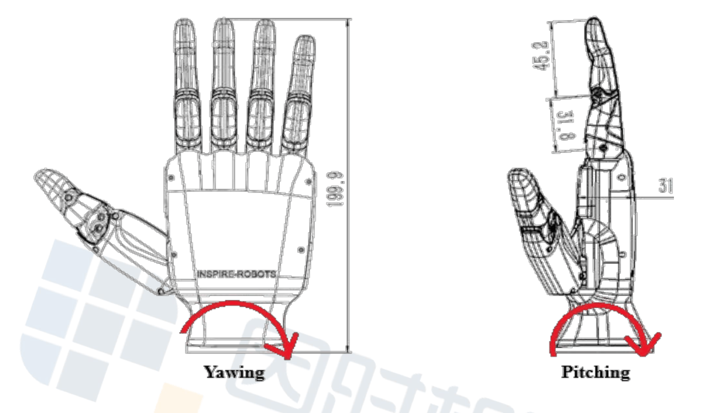
두 자유도의 동작 각도 범위는 다음과 같습니다.
- 피치 각도 범위: [−22.66°, 22.12°]
- 요 각도 범위: [−25.50°, 25.50°]
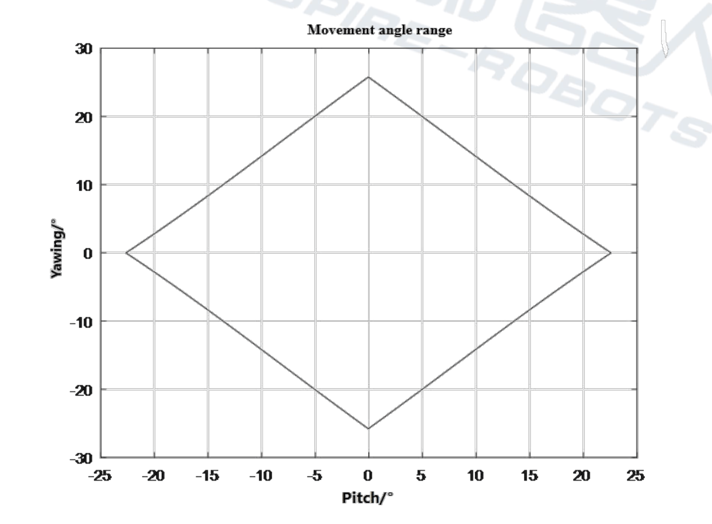
Inspire 제품 페이지는 손목 동작 범위를 요 ±27° · 피치 ±22°로 적습니다 (표 1). 이 장의 값은 손목 모듈 설명서의 값입니다.
손목 레지스터 문서
손목 관련 제어 · 상태 레지스터는 다음과 같습니다. 설정 · 읽기 방법은 손의 다른 레지스터와 같으며, 자세한 방법은 손 사용 설명서(이 책 4장)에 있습니다.
| 주소 | 약어 | 뜻 | 길이 | 권한 | 비고 |
|---|---|---|---|---|---|
| 1020 | WRIST_PITCH_ANGLE | 손목 실제 피치 각도 | 2 byte | R | 값 100이 1°. 예: 1125는 11.25° |
| 1022 | WRIST_YAW_ANGLE | 손목 실제 요 각도 | 2 byte | R | 위와 같음 |
| 1026 | WRIST_CURRENT1 | 손목 1번 서보 액추에이터 전류 | 2 byte | R | 단위 mA |
| 1024 | WRIST_CURRENT2 | 손목 2번 서보 액추에이터 전류 | 2 byte | R | 단위 mA |
| 1028 | WRIST_ERROR1 | 손목 1번 서보 액추에이터 오류 코드 | 1 byte | R | |
| 1030 | WRIST_ERROR2 | 손목 2번 서보 액추에이터 오류 코드 | 1 byte | R | |
| 1032 | WRIST_TEMP1 | 손목 1번 서보 액추에이터 온도 | 1 byte | R | |
| 1033 | WRIST_TEMP2 | 손목 2번 서보 액추에이터 온도 | 1 byte | R | |
| 1038 | WRIST_YAW_ANGLE_SET | 손목 요 각도 설정 | 2 byte | W/R | 값 100이 1°. 예: 1125는 11.25° |
| 1040 | WRIST_PITCH_ANGLE_SET | 손목 피치 각도 설정 | 2 byte | W/R | 위와 같음 |
| 1042 | PROFILE_TIME_MS_SET | 손목 동작 시간 설정 | 2 byte | W/R | 단위 ms. 현재 위치에서 목표 위치까지 걸리는 시간. '설정'에서 이 파라미터를 바꿔 손목 동작 속도 조절 |
손목 레지스터 주소는 손 레지스터 주소(6장, 1020 CURRENT_LIMIT(m) 등)와 겹치지만, 손목 레지스터는 아래처럼 손목 전용 명령 플래그(RS232 · RS485의 0x30 · 0x31, CAN의 4 · 5)로 읽고 씁니다.
RS232 · RS485 레지스터 읽기 · 쓰기 문서
RS232 · RS485 통신 파라미터는 115200 bps · 데이터 비트 8 · 정지 비트 1 · 패리티 없음입니다. 필드의 뜻(Address · Address_L · Address_H · Register_Length · Checksum)은 4장과 같습니다.
손목 레지스터 읽기
손목 레지스터 읽기 명령 프레임 형식은 아래와 같습니다 (원문 표 그대로).
| 바이트 | 값 | 설명 |
|---|---|---|
| byte[0] | 0xEB | 패킷 헤더 |
| byte[1] | 0x90 | 패킷 헤더 |
| byte[2] | ID | 손목 ID |
| byte[3] | 0x04 | 프레임 데이터 길이 |
| byte[4] | 0x30 | 레지스터 읽기 플래그 |
| byte[5] | 0x46 | 레지스터 시작 주소의 하위 8비트 |
| byte[6] | 0x06 | 레지스터 시작 주소의 상위 8비트 |
| byte[7] | 18 | 읽을 레지스터 길이 |
| byte[8] | Checksum | 체크섬 |
손은 읽기 명령에 다음 응답 프레임을 돌려줍니다.
| 바이트 | 값 | 설명 |
|---|---|---|
| byte[0] | 0x90 | 패킷 헤더 |
| byte[1] | 0xEB | 패킷 헤더 |
| byte[2] | ID | 손 ID |
| byte[3] | Register_Length+3 | 프레임 데이터 길이 |
| byte[4] | 0x30 | 레지스터 읽기 명령에 대한 응답 프레임 |
| byte[5] | Address_L | 레지스터 시작 주소의 하위 8비트 |
| byte[6] | Address_H | 레지스터 시작 주소의 상위 8비트 |
| byte[7] | Data[0] | 레지스터 값 |
| … | … | |
| byte[7+Register_Length-1] | Data[Register_Length-1] | |
| byte[7+Register_Length] | Checksum | 체크섬 |
읽기 예: 손목 서보 액추에이터 두 개의 전류
원문은 이 예를 '서보 액추에이터 전류 데이터는 레지스터 그룹 WRIST_CURRENT에 있으며, 시작 주소는 1024(0x03FC), 길이는 4바이트(0x04)'라고 설명합니다. 명령 프레임은 다음과 같습니다.
| 바이트 | 값 | 설명 |
|---|---|---|
| byte[0] | 0xEB | 패킷 헤더 |
| byte[1] | 0x90 | 패킷 헤더 |
| byte[2] | 0x01 | 손 ID: 1 |
| byte[3] | 0x04 | 프레임 데이터 길이 |
| byte[4] | 0x30 | 레지스터 읽기 플래그 |
| byte[5] | 0xFC | 레지스터 시작 주소의 하위 8비트 |
| byte[6] | 0x03 | 레지스터 시작 주소의 상위 8비트 |
| byte[7] | 0x02 | 읽을 레지스터 길이 |
| byte[8] | 0x36 | 체크섬 |
손목은 이 명령에 다음 응답 프레임을 돌려줍니다.
| 바이트 | 값 | 설명 |
|---|---|---|
| byte[0] | 0x90 | 패킷 헤더 |
| byte[1] | 0xEB | 패킷 헤더 |
| byte[2] | 0x01 | ID |
| byte[3] | 0x05 | 프레임 데이터 길이: 2 + 3 |
| byte[4] | 0x30 | 레지스터 읽기 명령에 대한 응답 프레임 |
| byte[5] | 0xFC | 레지스터 시작 주소의 하위 8비트 |
| byte[6] | 0x03 | 레지스터 시작 주소의 상위 8비트 |
| byte[7] · byte[8] | 0x0000 | 정수 00x0000 (원문 그대로) |
| byte[9] · byte[10] | 0x000 | 정수 0 (0x0000) |
| byte[11] | 0x35 | 체크섬 |
이 응답 프레임에서 서보 액추에이터 두 개의 전류가 0 A임을 알 수 있습니다.
# 원문 예의 바이트 (보냄 · 받음)
EB 90 01 04 30 FC 03 02 36
90 EB 01 05 30 FC 03 00 00 00 00 35
손목 레지스터 쓰기
손목 레지스터 쓰기 명령 프레임 형식은 아래와 같습니다. Data[0] ~ Data[Register_Length-1]이 레지스터에 쓸 데이터입니다.
| 바이트 | 값 | 설명 |
|---|---|---|
| byte[0] | 0xEB | 패킷 헤더 |
| byte[1] | 0x90 | 패킷 헤더 |
| byte[2] | ID | ID |
| byte[3] | Register_Length+3 | 프레임 데이터 길이 |
| byte[4] | 0x31 | 레지스터 쓰기 명령 플래그 |
| byte[5] | Address_L | 레지스터 시작 주소의 하위 8비트 |
| byte[6] | Address_H | 레지스터 시작 주소의 상위 8비트 |
| byte[7] | Data[0] | 레지스터에 쓸 데이터 |
| … | … | |
| byte[7+Register_Length-1] | Data[Register_Length-1] | |
| byte[7+Register_Length] | checksum | 체크섬 |
손은 쓰기 명령에 다음 응답 프레임을 돌려줍니다.
| 바이트 | 값 | 설명 |
|---|---|---|
| byte[0] | 0x90 | 패킷 헤더 |
| byte[1] | 0xEB | 패킷 헤더 |
| byte[2] | ID | 손 ID |
| byte[3] | 4 | 프레임 데이터 길이 |
| byte[4] | 0x31 | 레지스터 쓰기 명령에 대한 응답 프레임 |
| byte[5] | Address_L | 레지스터 시작 주소의 하위 8비트 |
| byte[6] | Address_H | 레지스터 시작 주소의 상위 8비트 |
| byte[7] | 1 | |
| byte[8] | checksum | 체크섬 |
쓰기 예: 손목 피치 −10.00° · 요 10.00°
ID가 1인 손목의 피치와 요 각도를 −10.00°와 10.00°로 정하는 예입니다. 레지스터 WRIST_YAW_ANGLE_SET(1038)과 WRIST_PITCH_ANGLE_SET(1040)을 고칩니다. 보낼 명령은 다음과 같습니다.
| 바이트 | 값 | 설명 |
|---|---|---|
| byte[0] | 0xEB | 패킷 헤더 |
| byte[1] | 0x90 | 패킷 헤더 |
| byte[2] | 0x01 | ID |
| byte[3] | 0x07 | 프레임 데이터 길이: 4 + 3 |
| byte[4] | 0x31 | 레지스터 쓰기 명령 플래그 |
| byte[5] | 0x0E | 레지스터 시작 주소의 하위 8비트 |
| byte[6] | 0x04 | 레지스터 시작 주소의 상위 8비트 |
| byte[7] · byte[8] | 0x18FC | −10.00°: 레지스터에 −1000(0xFC18)을 씀 |
| byte[9] · byte[10] | 0xEB03 | 10.00°: 레지스터에 1000(0x03EB)을 씀 |
| byte[11] | 0x4D | 체크섬 |
손목은 이 명령에 다음 응답 프레임을 돌려줍니다.
| 바이트 | 값 | 설명 |
|---|---|---|
| byte[0] | 0x90 | 패킷 헤더 |
| byte[1] | 0xEB | 패킷 헤더 |
| byte[2] | 0x01 | ID |
| byte[3] | 0x04 | 프레임 데이터 길이 |
| byte[4] | 0x31 | 레지스터 쓰기 명령에 대한 응답 프레임 |
| byte[5] | 0x0E | 레지스터 시작 주소의 하위 8비트 |
| byte[6] | 0x04 | 레지스터 시작 주소의 상위 8비트 |
| byte[7] | 0x01 | |
| byte[8] | 0x49 | 체크섬 |
# 원문 예의 바이트 (보냄 · 받음)
EB 90 01 07 31 0E 04 18 FC EB 03 4D
90 EB 01 04 31 0E 04 01 49
- 읽기 형식 표(표 39)의 byte[5] ~ byte[7]에는 일반 필드 이름 대신 값(0x46 · 0x06 · 18, 곧 주소 0x0646 = 1606과 길이 18)이 적혀 있습니다. 1606은 손의
ERROR(m)주소입니다. - 읽기 예의 설명은 시작 주소를 '1024(0x03FC)', 길이를 '4바이트(0x04)'로 적었으나, 0x03FC는 1020(
WRIST_PITCH_ANGLE)이고 명령 프레임의 길이 바이트는 0x02입니다. 응답의 데이터 길이 0x05(2 + 3)와 달리 데이터 칸은 4바이트(byte[7] ~ byte[10])입니다. 체크섬 0x36 · 0x35는 표의 바이트(길이 0x05, 데이터 0)와 맞습니다. - 쓰기 예: 1000은 0x03E8인데 원문은 0x03EB(= 1003, 바이트 EB 03)로 적었습니다. 체크섬 0x4D는 EB 03으로 계산한 값입니다 (E8 03이면 0x4A).
- 쓰기 예의 설명은 피치 −10.00°, 요 10.00°이지만, 주소 순서대로라면 첫 값(−1000)이 1038
WRIST_YAW_ANGLE_SET(요), 둘째 값(1000)이 1040WRIST_PITCH_ANGLE_SET(피치)에 들어갑니다. - 레지스터 표는
WRIST_CURRENT1을 1026,WRIST_CURRENT2를 1024로 적었습니다 (번호와 주소의 순서가 반대). 원문 그대로 옮겼습니다.
CAN 레지스터 읽기 · 쓰기 문서
CAN 인터페이스는 주문 제작 손에 있습니다 (3장). 보율은 1000K입니다. 확장 식별자와 데이터 프레임 형식을 쓰며, 표준 식별자와 리모트 프레임은 쓰지 않습니다. 확장 식별자는 29비트이며, 하위 비트부터 다음과 같이 정의합니다.
- bit0 ~ 13:
Hand_ID. 최대 16383대를 지원합니다. - bit14 ~ 25: 다룰 레지스터의 시작 주소
- bit26 ~ 28: 읽기 · 쓰기 플래그. 0은 손 레지스터 읽기, 1은 손 레지스터 쓰기, 4는 손의 손목 레지스터 읽기, 5는 손의 손목 레지스터 쓰기입니다.
| 식별자 | bit 31-29 | bit 26-28 (W/R) | bit 14-25 | bit 13-0 |
|---|---|---|---|---|
| 뜻 | 예약 | 0: R — 손 레지스터 읽기 1: W — 손 레지스터 쓰기 4: R — 손목 레지스터 읽기 5: R — 손목 레지스터 쓰기 (원문 그대로) | 레지스터 주소 | Hand_ID |
레지스터 읽기
| 식별자 | bit 31-29 | bit 26-28 | bit 14-25 | bit 13-0 |
|---|---|---|---|---|
| 뜻 | 예약 | 4 | 주소 | Hand_ID |
명령 프레임의 데이터 길이는 1바이트이고, 데이터 내용은 읽을 레지스터 데이터의 길이입니다. 손목은 이 명령을 받아 제대로 해석하면 같은 형식의 식별자(bit 26-28 = 4)로 프레임을 돌려줍니다. 응답 프레임의 데이터 길이는 돌려주는 레지스터 데이터의 길이이고, 데이터 내용은 레지스터 데이터입니다.
읽기 예: 손목 서보 액추에이터 두 개의 전류
ID가 1인 손의 손목 서보 액추에이터 두 개의 전류를 읽으려면 다음 프레임을 CAN 버스에 보냅니다. 식별자는 2진수로 0001 0001 0000 0000 0000 0000 0000 0001입니다.
| bit 31-29 | bit 26-28 | bit 14-25 | bit 13-0 |
|---|---|---|---|
| 0 | 4 | CURRENT_ACT(0) 주소 = 1024, 2진수 010000000000 | 1 |
데이터 길이는 1, 데이터 내용은 4입니다 (서보 액추에이터 두 개의 전류는 각각 정수이며 데이터 길이는 2바이트). 손은 다음 프레임을 돌려줍니다. 식별자는 2진수로 0000 0001 1000 0100 0000 0000 0000 0001입니다.
| bit 31-29 | bit 26-28 | bit 14-25 | bit 13-0 |
|---|---|---|---|
| 0 | 4 | CURRENT_ACT(0) 주소 = 1024, 2진수 010000000000 | 1 |
데이터 길이는 4이고, 데이터 내용은 아래와 같습니다. 서보 액추에이터 전류는 정수이므로 이 데이터를 정수로 바꿉니다 (하위 바이트가 먼저, 상위 바이트가 뒤). 상위 · 하위 바이트를 맞바꾸면 16진수 0x0000, 10진수 0입니다.
| byte0 | byte1 | byte2 | byte3 |
|---|---|---|---|
| 0x00 | 0x00 | 0x00 | 0x00 |
# 보냄: 식별자 0x11000001 (4 << 26 | 1024 << 14 | 1), 데이터 길이 1 04 # 받음: 데이터 길이 4 → 전류 0, 0 00 00 00 00
레지스터 쓰기
| 식별자 | bit 31-29 | bit 26-28 | bit 14-25 | bit 13-0 |
|---|---|---|---|---|
| 뜻 | 예약 | 5 | 주소 | Hand_ID |
명령 프레임의 데이터 길이는 레지스터에 쓸 데이터의 길이이고, 데이터 내용은 레지스터에 쓸 데이터입니다. 손은 이 명령을 받아 제대로 해석하면 같은 형식의 식별자(bit 26-28 = 5)로 프레임을 돌려줍니다. 응답 프레임의 데이터 길이는 0입니다.
쓰기 예: 손목 피치 −10.00° · 요 10.00°
ID가 1인 손의 손목 피치와 요 각도를 −10.00°와 10.00°로 정하려면 다음 프레임을 CAN 버스에 보냅니다. 식별자는 2진수로 0001 0101 0000 0011 1000 0000 0000 0001입니다.
| bit 31-29 | bit 26-28 | bit 14-25 | bit 13-0 |
|---|---|---|---|
| 0 | 5 | ANGLE_SET(0) 주소 = 1492, 2진수 010000001110 | 1 |
데이터 길이는 4이고, 데이터 내용은 손목 피치와 요 각도 −10.00°(0xFC18)와 10.00°(0x03EB)입니다.
| byte0 | byte1 | byte2 | byte3 |
|---|---|---|---|
| 0xFC | 0x18 | 0x03 | 0xEB |
손은 다음 프레임을 돌려줍니다. 식별자는 2진수로 0001 0101 0000 0011 1000 0000 0000 0001이고, 데이터 길이는 0입니다.
| bit 31-29 | bit 26-28 | bit 14-25 | bit 13-0 |
|---|---|---|---|
| 0 | 5 | ANGLE_SET (0) 주소 = 1038, 2진수 010000001110 | 1 |
# 보냄: 식별자 0x15038001 (5 << 26 | 1038 << 14 | 1), 데이터 길이 4 (원문 바이트 그대로) FC 18 03 EB # 받음: 식별자 0x15038001, 데이터 길이 0
- 식별자 정의 표(표 47)의 '5: R'은 쓰기(W)여야 합니다.
- 읽기 예의 응답 식별자 2진수(0000 0001 1000 0100 … 0001 = 0x01840001)는 플래그 0 · 주소 1552로, 손 설명서의 검지 각도 읽기 예와 같은 값입니다. 바로 아래 표(플래그 4 · 주소 1024)와 맞지 않습니다.
- 읽기 예는 주소 1024의 이름을
CURRENT_ACT(0)으로 적었습니다. 레지스터 표의 이름은WRIST_CURRENT2입니다. - 쓰기 예의 명령 표는 주소를 '
ANGLE_SET(0)= 1492'로 적었으나, 같은 칸의 2진수 010000001110과 식별자는 1038(WRIST_YAW_ANGLE_SET)이고 응답 표도 1038입니다. - 쓰기 예의 데이터 바이트(FC 18 03 EB)는 상위 바이트가 먼저 옵니다. 읽기 예의 설명(하위 바이트가 먼저)과 RS485 예(18 FC EB 03)와 순서가 반대이며, 10.00°의 값도 0x03EB(1003)로 적혀 있습니다.
- 16진 식별자(0x11000001 · 0x15038001)는 원문의 명령 2진수를 옮겨 적은 것입니다.
PC 소프트웨어
Inspire의 Windows용 PC 테스트 소프트웨어(창 제목 InspireHand)로 RS485에 연결한 손의 상태를 보고, 손가락을 움직이고, 파라미터와 동작 시퀀스를 설정합니다. 문서
이 장은 Inspire의 The Dexterous Hands Instructions(RH56DF3-1R을 예로 든 따라 하기)와 The Dexterous Hand PC Instructions(화면 설명)를 함께 옮겼습니다. 화면은 영문판이며, 버튼 이름은 화면 글자 그대로 적습니다.
준비와 연결 문서
RH56 시리즈 손은 6자유도에 모터 관절이 12개이며, 무게는 500 g입니다. 권장 전원 전압은 24 V, 최대 전류는 5 A입니다. RS485 직렬 포트 통신 파라미터는 115200 bps · 데이터 비트 8 · 정지 비트 1 · 패리티 없음입니다.
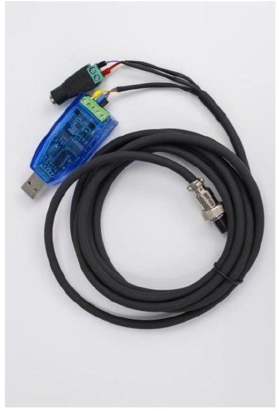
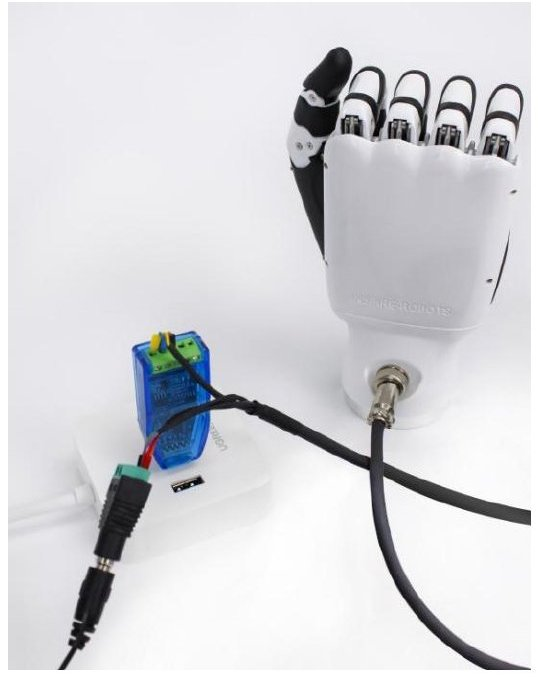
- 케이블을 연결하고 전원을 켭니다.항공 플러그 케이블의 DC 단자를 전원 어댑터에, 항공 플러그 포트를 손의 항공 플러그에 연결합니다. USB-RS485 케이블의 USB 포트를 PC에 연결하고 전원을 켭니다.
- PC 테스트 소프트웨어를 열고 연결합니다.'Dexterous Hands - PC Test Software'를 실행하고 왼쪽 위의 Connection Search(화면 메뉴 Connect)를 누릅니다. 손이 연결된 직렬 포트 번호를 고르고 Search를 누릅니다.
- 연결을 확인합니다.연결되면 오른쪽 아래에 UART successfully connected가 표시되고, 화면 오른쪽 아래에는 각도 · 전류 같은 데이터도 실시간으로 갱신되어 나타납니다.
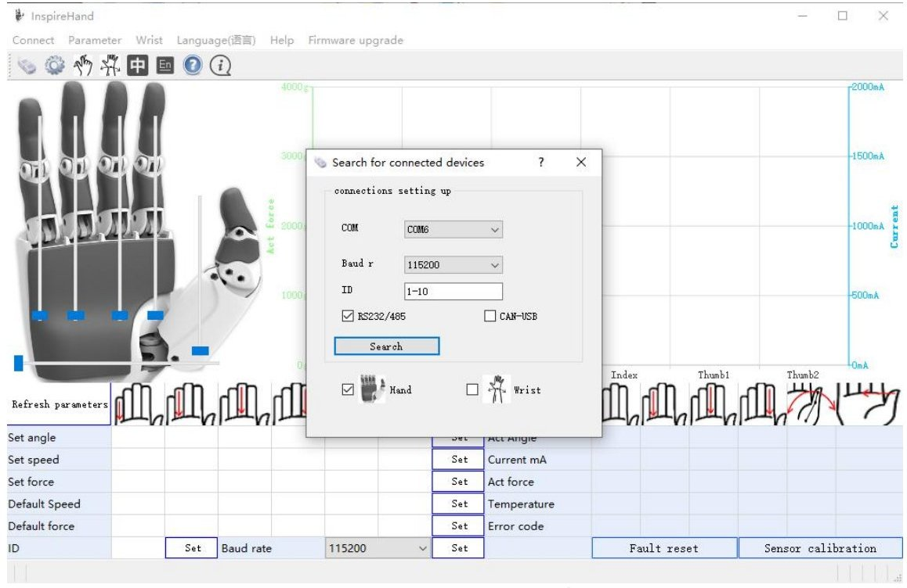
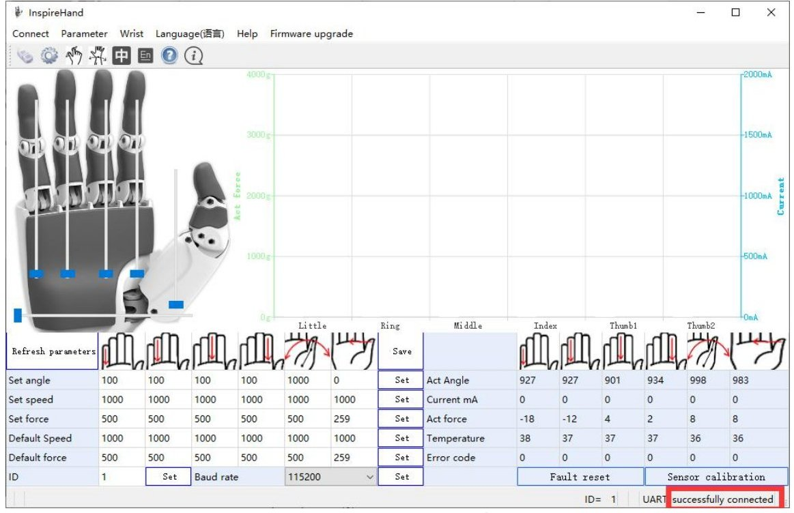
상태 데이터 보기 문서
메인 화면에는 손가락별 실시간 각도 · 전류 · 힘과 구동부 온도 · 오류 코드가 표시됩니다. 손가락에 걸린 힘이 정확하지 않으면 힘 센서를 보정해야 합니다 (Sensor calibration. 6장 GESTURE_FORCE_CLB의 주의 사항을 지키십시오).
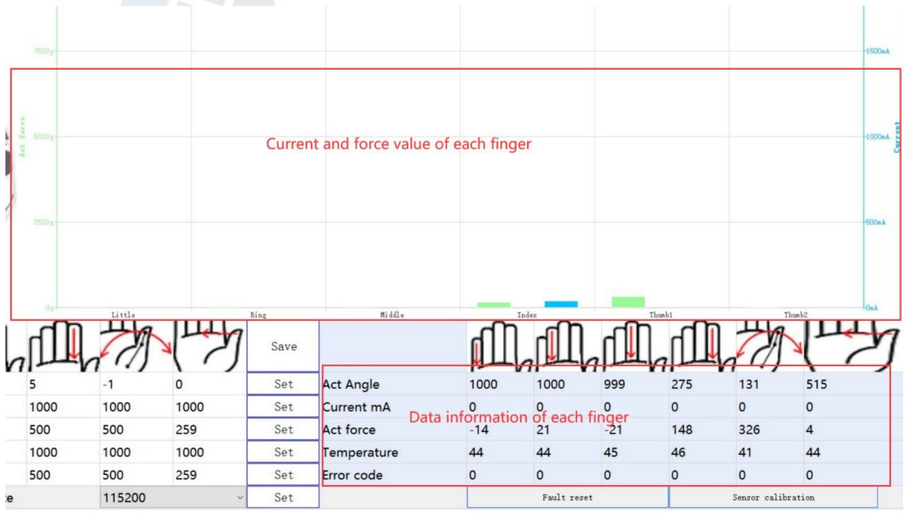
손가락별 서보 액추에이터 ID는 다음과 같습니다. 화면 표의 열 순서도 같습니다 (Little · Ring · Middle · Index · Thumb1 · Thumb2).
| ID | 1 | 2 | 3 | 4 | 5 | 6 |
|---|---|---|---|---|---|---|
| 손가락 | 새끼손가락 | 약지 | 중지 | 검지 | 엄지 굽힘 | 엄지 회전 |
손가락 움직이기 문서
왼쪽 손 그림의 슬라이더를 끌면 손가락이 움직입니다. 아래 표의 Set angle · Set speed · Set force 줄에 값을 넣고 줄 끝의 Set을 눌러 손가락을 제어할 수도 있습니다.
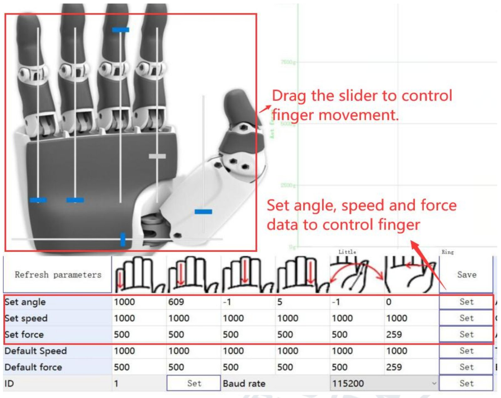
파라미터 설정 문서
Refresh parameters를 누르면 손 서보 액추에이터의 파라미터를 볼 수 있습니다. 파라미터의 전원 투입 기본 속도(Default Speed)와 기본 힘(Default force)은 다음 순서로 바꿉니다.
- 바꿀 서보 액추에이터 값을 더블클릭해 고칩니다.
- 줄 끝의 Set을 누릅니다.
- Save를 누릅니다.
- 전원을 껐다가 다시 켭니다.
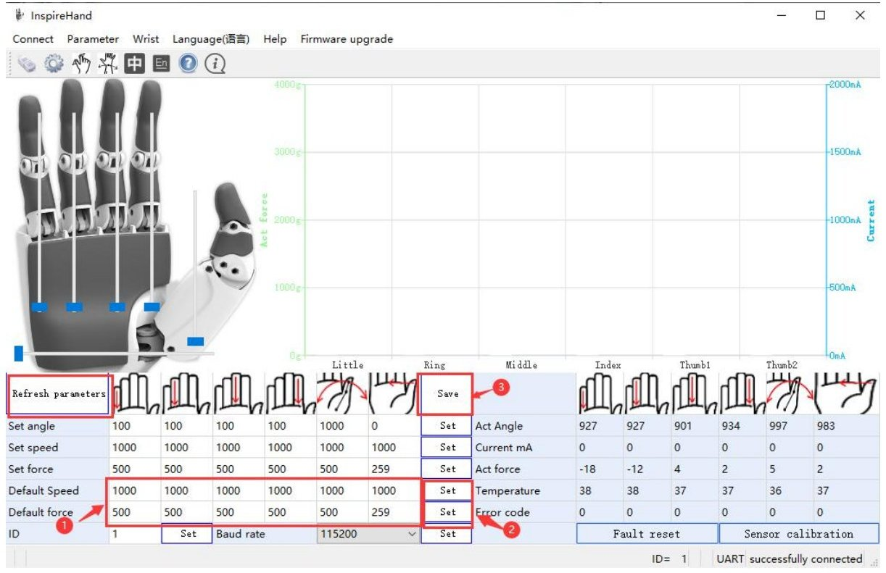
맨 아래 줄에서 손 ID(ID)와 보율(Baud rate)을 정합니다.
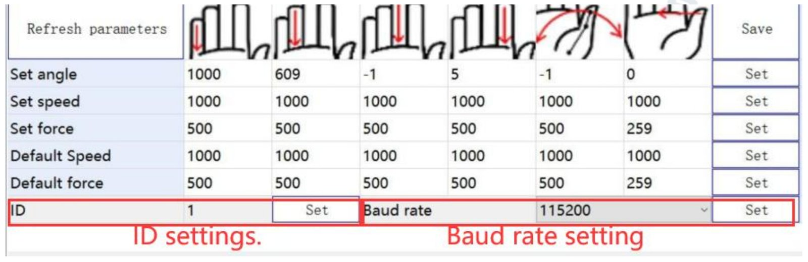
동작 시퀀스 문서
손의 동작은 PC의 손 그림으로 직접 만들 수도 있고, 손 내부 파라미터(동작 시퀀스, 7장)로 설정할 수도 있습니다. Parameter 메뉴에서 Action parameter를 고르면 동작 시퀀스 창이 열립니다.
- upload: 손에 있는 동작 시퀀스 파라미터를 읽어 소프트웨어의 표에 보여 줍니다.
- download: 소프트웨어에서 편집한 동작 시퀀스 파라미터를 손으로 보냅니다.
- Test: 지금 고른 번호의 동작 시퀀스로 손을 움직입니다.
PC Instructions는 동작 시퀀스 표를 다음과 같이 설명합니다. 이 소프트웨어로 손의 1 ~ 13번 동작 시퀀스 데이터를 설정할 수 있습니다. 동작 시퀀스마다 최대 8단계이며, 단계마다 손가락 각도 · 동작 속도 · 힘 · 대기 시간을 따로 정합니다.
- 단계 수: 0 ~ 8
- 손가락 각도: 그 단계의 목표 손가락 각도. 입력 범위는 0 ~ 1000이며, 0은 손가락을 가장 많이 굽힌 상태, 1000은 완전히 편 상태입니다. 칸을 비워 두면 그 손가락은 움직이지 않습니다.
- 동작 속도: 1 ~ 1000
- 힘: 1 ~ 1000
- 지연 시간: 그 단계의 대기 시간 (원문에는 '손가락 동작 속도를 정합니다'로 잘못 적혀 있음)
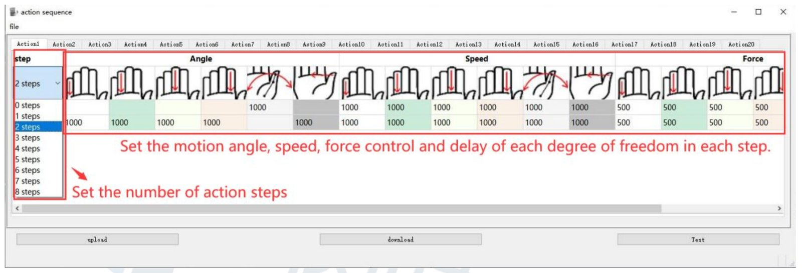
공장 동작 13가지
PC 소프트웨어에는 동작 13가지가 미리 들어 있습니다. 동작을 고르고 Test를 누르면 손이 그 동작을 합니다.
| 번호 | 동작 | 번호 | 동작 |
|---|---|---|---|
| Action1 | 손바닥 펴기 | Action8 | 엄지로 옆에서 집기 |
| Action2 | 물병 쥐기 | Action9 | 엄지로 옆에서 빠르게 집기 |
| Action3 | 물병 빠르게 쥐기 | Action10 | 네 손가락 굽히기 |
| Action4 | 세 손가락으로 공 집기 | Action11 | 검지로 탁구공 튕기기 |
| Action5 | 세 손가락으로 공 빠르게 집기 | Action12 | 조이스틱 조작 |
| Action6 | 세 손가락으로 집기 | Action13 | 주먹 쥐기 |
| Action7 | 세 손가락으로 빠르게 집기 |
Action8(엄지로 옆에서 집기)을 예로 듭니다. 손가락 서보 액추에이터의 각도 · 속도 · 쥐는 힘은 모두 0 ~ 1000 범위로 정합니다. 먼저 새끼손가락 · 약지 · 중지 · 검지의 각도를 0, 엄지를 움직이는 서보 액추에이터 두 개의 각도를 1000, 속도와 쥐는 힘을 1000으로 정합니다. 지연 시간 1000 ms 뒤에 엄지 굽힘 서보 액추에이터의 각도를 0, 속도를 200, 쥐는 힘을 1000으로 바꾸면 이 동작이 됩니다.
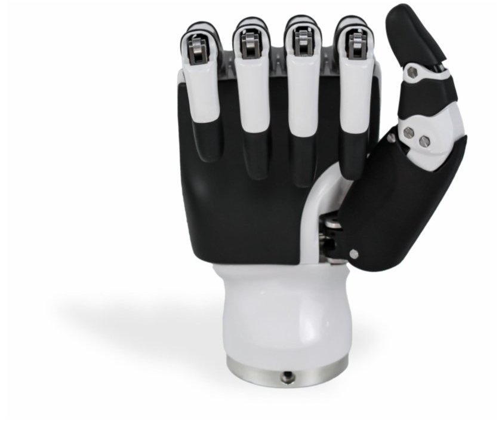
동작 만들기: OK 제스처
PC 소프트웨어로 동작을 직접 만들 수 있습니다. 예를 들어 Action14에서 왼쪽의 전체 단계 수(steps)를 고르면 그 수만큼 Step 줄이 생기고, 줄마다 각도 · 속도 · 힘 · 지연 시간을 정해 손을 움직입니다. OK 제스처는 두 단계로 만듭니다.
- Step 1서보 액추에이터 1 · 2 · 3의 각도를 1000, 서보 액추에이터 6의 각도를 0으로 바꿉니다.
- Step 2지연 시간 1000 ms 뒤에 서보 액추에이터 4 · 5의 각도를 500, 속도를 200으로 바꿉니다. OK 제스처가 완성됩니다.
정확한 각도를 모를 때는 손 그림의 슬라이더로 손을 움직여 보고, 화면의 실제 각도(Act Angle)를 표에 옮겨 적으면 됩니다 (그림 22).
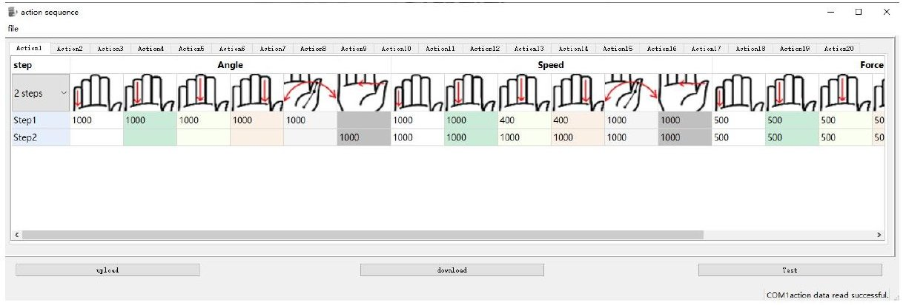
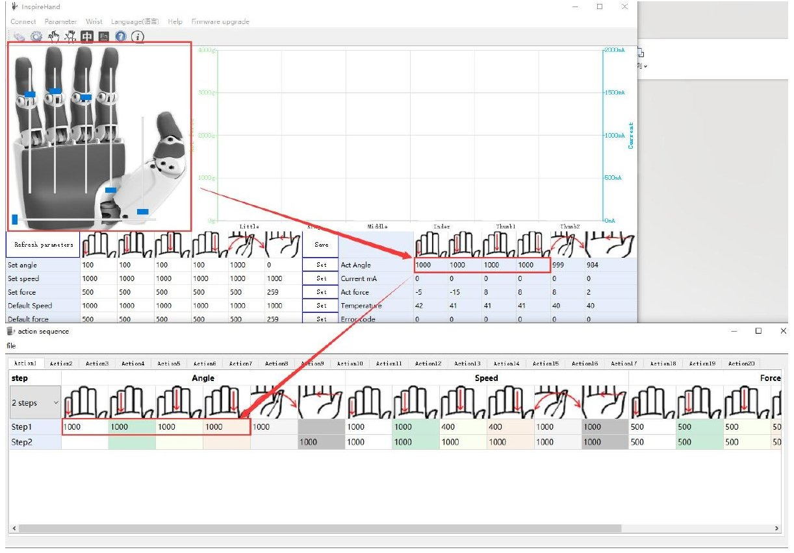
- 그림의 표는 Action1 탭이며 값도 본문의 OK 제스처(서보 1 ~ 3 각도 1000, 서보 6 각도 0)와 다릅니다. 본문의 값을 따르십시오.
- PC Instructions는 '1 ~ 13번 동작 시퀀스를 설정할 수 있다'고 적고, Instructions에서는 13번까지가 미리 들어 있는 동작이며 새 동작은 Action14에 만듭니다. 사용 설명서(7장)는 손이 동작 시퀀스 40개를 저장한다고 적습니다.
- PC Instructions의 속도 · 힘 범위는 1 ~ 1000, Instructions는 0 ~ 1000입니다.
동작 시퀀스 파일
동작 시퀀스 창의 file 메뉴:
- open offline file: 동작 시퀀스 데이터 파일을 열어 소프트웨어의 동작 시퀀스 데이터 영역에 보여 줍니다.
- download file data to the device: 동작 시퀀스 데이터 파일의 데이터를 손으로 한꺼번에 보냅니다.
- save as offline file: 소프트웨어에 보이는 · 편집한 동작 시퀀스 데이터 전체를 지정한 파일로 저장합니다.
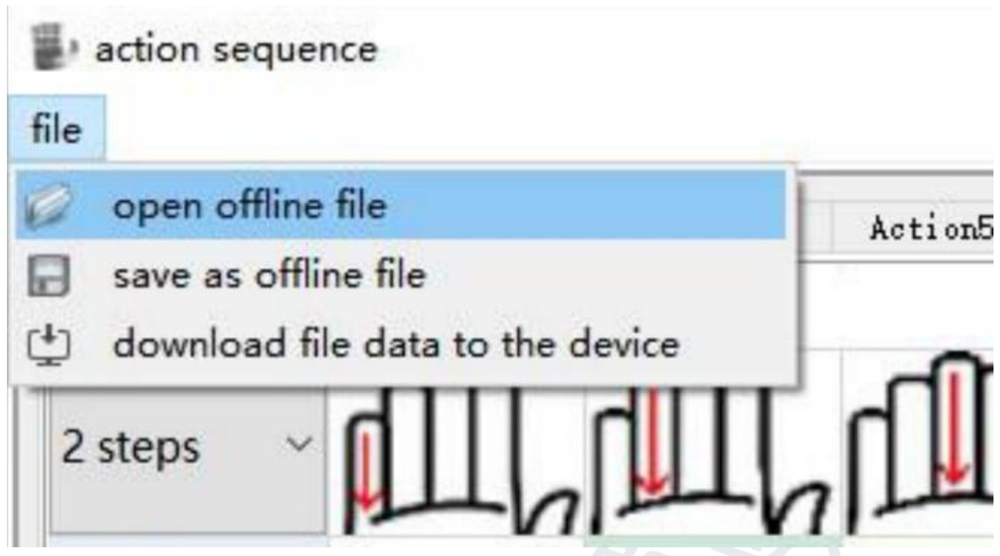
Instructions는 최대 전류를 5 A로 적고, 사용 설명서(표 2)는 최대 쥐는 힘일 때 전류를 2 A @ 24 V로 적습니다.
Unitree G1 연동
Unitree G1에는 Inspire RH56DFX 다관절 손을 달 수 있습니다. 이 장은 Unitree 문서 「DFX Dexterous Hand」를 옮기고, 직렬 포트 권한 · DDS 초기화는 Unitree의 다른 G1 문서에서, Humanoid Studio 설정은 WeGo 사용 가이드에서 보탠 것입니다. 문서
이 손은 6자유도 · 운동 관절 12개로 사람 손의 복잡한 동작을 흉내 냅니다. 촉각 센서가 달린 Inspire 손(Unitree 문서의 'Inspire FTP')은 Inspire RH56E2 · RH56DFTP 운용 설명서를, G1에 다는 다른 손은 Unitree G1 개발 설명서를 보십시오.
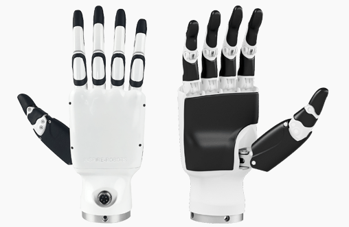
제어 방식 문서
Inspire 손의 공식 SDK는 직렬 포트로 통신합니다. 로봇에 딸린 USB-직렬 모듈을 PC2(개발 연산 유닛)에 꽂으면 손과 통신하고 손을 제어할 수 있습니다. 이때 포트 이름은 보통 /dev/ttyUSB1(왼손) · /dev/ttyUSB2(오른손)입니다.
- Inspire SDK로 제어Inspire 다관절 손의 공식 통신 프로토콜(이 책 4 ~ 7장)에 따라 직접 프로그램을 짭니다.
- Unitree Inspire Hand SDK로 제어G1의 통신은 DDS 프레임워크를 기반으로 합니다.
unitree_sdk2로 손을 제어할 수 있도록, 직렬 포트로 주고받는 데이터를 DDS 메시지로 바꾸는 예제 프로그램을 Unitree가 제공합니다 (이 장 'SDK 설치').
Unitree의 G1 문서인데 이 절은 'H1이 USB-직렬 모듈을 제공하며, H1 개발 연산 유닛(PC2)에 꽂는다'고 적었습니다. 아래 예제 코드의 클래스 이름(H1HandController)과 IDL 설명 링크(H1 개발 문서의 Basic_Services_Interface)도 H1 문서에서 가져온 것입니다. 첫 패키지도 'H1 예제를 그대로 씀'으로 적혀 있습니다.
표준 RH56DFX의 통신 인터페이스는 RS485이므로(표 2 · 3장), 손 쪽에서 보면 이 연결은 RS485 직렬 통신입니다. 통신 파라미터는 115200 bps · 데이터 비트 8 · 정지 비트 1 · 패리티 없음이며(9장 '준비와 연결'), 보율은 레지스터 REDU_RATIO(1002, 6장)로 바꿉니다.
Unitree 문서는 G1 손목에서 손까지의 배선 · 커넥터와, 손 전원(24 V, 표 2)을 G1의 어디에서 받는지 적지 않았습니다. 손 쪽 핀 정의는 3장에 있습니다. G1 쪽 배선과 전원 경로는 이 책에서 아직 확인하지 못했으므로, 손을 떼거나 다시 달기 전에 구입처에 문의하십시오.
SDK 인터페이스 문서
토픽 rt/inspire/cmd에 unitree_go::msg::dds::MotorCmds_ 메시지를 발행해 손을 제어하고, 토픽 rt/inspire/state에서 unitree_go::msg::dds::MotorStates_ 메시지를 구독해 손 상태를 얻습니다.
두 손을 메시지 하나로 다루며, 배열 앞 6개가 오른손, 뒤 6개가 왼손입니다 (표 59). 촉각형 Inspire 손의 SDK(rt/inspire_hand/…/l · r)처럼 손마다 토픽이 나뉘지 않습니다.
| 토픽 | 메시지 형식 | 방향 · 내용 |
|---|---|---|
rt/inspire/cmd | unitree_go::msg::dds::MotorCmds_ | 사용자 → G1 · 제어 |
rt/inspire/state | unitree_go::msg::dds::MotorStates_ | G1 → 사용자 · 상태 |
IDL 데이터 형식 문서
모터 데이터는 배열로 되어 있으며, 두 손 모터 12개의 데이터를 담습니다. MotorCmds_.idl · MotorState_.idl의 자세한 형식은 Unitree 문서 'Basic_Services_Interface'에 있습니다.
현재 손은 관절 제어만 지원합니다. IDL 형식에서는 파라미터 q만 쓰이고, 나머지는 예약 필드입니다.
# namespace unitree_go::msg::dds_
# unitree_go::msg::dds_::MotorCmds_
struct MotorCmds_
{
sequence<unitree_go::msg::dds_::MotorCmd_> cmds;
};
# unitree_go::msg::dds_::MotorStates_
struct MotorCmds_
{
sequence<unitree_go::msg::dds_::MotorState> states;
};
원문 IDL의 둘째 구조체는 주석이 MotorStates_인데 이름이 MotorCmds_로, 원소 형식이 MotorState_가 아닌 MotorState로 적혀 있습니다. 원문 그대로 옮겼습니다.
q 값의 범위
q는 0 ~ 1 범위이며 0은 닫기(close), 1은 열기(open)입니다 (아래 예제의 주석). 손 자체의 각도 설정값은 0 ~ 1000 범위의 정수입니다 (6장 ANGLE_SET(m)).
Unitree 문서는 변환 프로그램이 명령의 q(0 ~ 1)를 손의 어느 레지스터 값으로 어떻게 바꾸는지, 상태 메시지의 q를 어느 레지스터에서 읽는지 적지 않았습니다. 정확한 환산이 필요하면 변환 프로그램의 소스를 확인하십시오.
IDL의 관절 순서
| 손 | 새끼 (pinky) | 약지 (ring) | 중지 (middle) | 검지 (index) | 엄지 굽힘 (thumb-bend) | 엄지 회전 (thumb-rotation) |
|---|---|---|---|---|---|---|
| 오른손 | 0 | 1 | 2 | 3 | 4 | 5 |
| 왼손 | 6 | 7 | 8 | 9 | 10 | 11 |
SDK 설치 문서
변환 프로그램과 예제는 Unitree가 아래 패키지로 배포합니다. 예제 클래스는 C++로 쓰였으며, unitree_sdk2(https://github.com/unitreerobotics/unitree_sdk2)의 DDS 채널(ChannelPublisher · ChannelSubscriber)과 행렬 라이브러리 Eigen을 씁니다. unitree_sdk2 설치는 Unitree G1 개발 설명서를 보십시오.
| 날짜 | 변경 내용 | 받는 곳 |
|---|---|---|
| 2024-5-7 | 첫 배포 (H1 예제를 그대로 씀) | https://oss-global-cdn.unitree.com/static/0a8335f7498548d28412c31ea047d4be.zip |
| 2025-8-28 | https://github.com/unitreerobotics/DFX_inspire_service |
unitree_sdk2와 DFX_inspire_service 저장소는 BSD-3-Clause, 예제가 쓰는 Eigen은 MPL-2.0입니다. 모두 상업적 사용을 허용합니다.
Unitree 문서는 패키지 받는 곳만 적고, 빌드 방법 · 실행 명령 · PC2에서 저절로 시작되는지는 적지 않았습니다. 이 책은 그 절차를 아직 확인하지 못했습니다. 패키지에 든 안내 문서를 따르십시오.
사용 문서
손을 G1에 달거나 배선할 때는 관련된 모든 장치의 전원을 끊으십시오 (2장 '배선'). 배선과 설정을 마친 뒤에는 시운전으로 손이 안전하게 동작하는지 먼저 확인하십시오 (2장 '전원 투입').
직렬 포트 권한
Ubuntu에서 일반 사용자가 손의 직렬 포트(보통 /dev/ttyUSB1 · /dev/ttyUSB2)를 열려면 그 사용자를 직렬 장치 권한이 있는 dialout 그룹에 넣어야 합니다.
다음은 Unitree가 G1의 촉각형 Inspire 손 문서(「Inspire FTP Dexterity Hand」)에서 같은 USB-직렬 모듈에 대해 안내하는 단계이며, 4단계의 포트 이름만 DFX 손에 맞췄습니다.
# 1. 이미 dialout 그룹에 있는지 확인 groups $USER # 2. dialout 그룹에 추가 (your_username을 실제 사용자 이름으로) sudo usermod -aG dialout your_username # 3. 로그아웃 후 다시 로그인 (또는 재부팅) # 4. 장치 권한 확인 (DFX 손의 포트) ls -l /dev/ttyUSB1 /dev/ttyUSB2
DDS 초기화와 네트워크 카드
아래 예제 클래스에는 main()이 없습니다. unitree_sdk2 프로그램은 채널을 만들기 전에 채널 팩토리를 한 번 초기화하며, 이때 DDS가 쓸 네트워크 카드를 정합니다.
Unitree의 G1 「Hand SDK Interface」 예제(Dex2-5 · Dex1-1용)는 다음과 같이 초기화하고, 첫 명령행 인자로 네트워크 카드 이름을 받습니다.
unitree::robot::ChannelFactory::Instance()->Init(0, argc > 1 ? argv[1] : "");
네트워크 카드는 로봇 네트워크(192.168.123.x)에 연결된 것으로 정하십시오.
예제: 손 제어 클래스
다음은 예제에 들어 있는 클래스로, 손 제어 인터페이스를 감싼 것입니다. ctrl()에 넣는 각도는 0 ~ 1 범위이며, 0은 닫기(close), 1은 열기(open)입니다. 라벨 open · close · half는 모든 관절을 각각 1 · 0 · 0.5로 정합니다.
/**
* @brief Unitree H1 Hand Controller
* The user can subscribe to "rt/inspire/state" to get the current state of the hand and publish to "rt/inspire/cmd" to control the hand.
*
* IDL Types
* user ---(unitree_go::msg::dds_::MotorCmds_)---> "rt/inspire/cmd"
* user <--(unitree_go::msg::dds_::MotorStates_)-- "rt/inspire/state"
*
* @attention Currently the hand only supports position control, which means only the `q` field in idl is used.
*/
class H1HandController
{
public:
H1HandController()
{
this->InitDDS_();
}
/**
* @brief Control the hand to a specific label
*/
void ctrl(std::string label)
{
if(labels.find(label) != labels.end())
{
this->ctrl(labels[label], labels[label]);
}
else
{
std::cout << "Invalid label: " << label << std::endl;
}
}
/**
* @brief Move the fingers to the specified angles
*
* @note The angles should be in the range [0, 1]
* 0: close 1: open
*/
void ctrl(
const Eigen::Matrix<float, 6, 1>& right_angles,
const Eigen::Matrix<float, 6, 1>& left_angles)
{
for(size_t i(0); i<6; i++)
{
cmd.cmds()[i].q() = right_angles(i);
cmd.cmds()[i+6].q() = left_angles(i);
}
handcmd->Write(cmd);
}
/**
* @brief Get the right hand angles
*
* Joint order: [pinky, ring, middle, index, thumb_bend, thumb_rotation]
*/
Eigen::Matrix<float, 6, 1> getRightQ()
{
std::lock_guard<std::mutex> lock(mtx);
Eigen::Matrix<float, 6, 1> q;
for(size_t i(0); i<6; i++)
{
q(i) = state.states()[i].q();
}
return q;
}
/**
* @brief Get the left hand angles
*
* Joint order: [pinky, ring, middle, index, thumb_bend, thumb_rotation]
*/
Eigen::Matrix<float, 6, 1> getLeftQ()
{
std::lock_guard<std::mutex> lock(mtx);
Eigen::Matrix<float, 6, 1> q;
for(size_t i(0); i<6; i++)
{
q(i) = state.states()[i+6].q();
}
return q;
}
unitree_go::msg::dds_::MotorCmds_ cmd;
unitree_go::msg::dds_::MotorStates_ state;
private:
void InitDDS_()
{
handcmd = std::make_shared<unitree::robot::ChannelPublisher<unitree_go::msg::dds_::MotorCmds_>>(
"rt/inspire/cmd");
handcmd->InitChannel();
cmd.cmds().resize(12);
handstate = std::make_shared<unitree::robot::ChannelSubscriber<unitree_go::msg::dds_::MotorStates_>>(
"rt/inspire/state");
handstate->InitChannel([this](const void *message){
std::lock_guard<std::mutex> lock(mtx);
state = *(unitree_go::msg::dds_::MotorStates_*)message;
});
state.states().resize(12);
}
// DDS parameters
std::mutex mtx;
unitree::robot::ChannelPublisherPtr<unitree_go::msg::dds_::MotorCmds_> handcmd;
unitree::robot::ChannelSubscriberPtr<unitree_go::msg::dds_::MotorStates_> handstate;
// Saved labels
std::unordered_map<std::string, Eigen::Matrix<float, 6, 1>> labels = {
{"open", Eigen::Matrix<float, 6, 1>::Ones()},
{"close", Eigen::Matrix<float, 6, 1>::Zero()},
{"half", Eigen::Matrix<float, 6, 1>::Constant(0.5)},
};
};
Humanoid Studio에서 쓰기 문서
WeGo Humanoid Studio와 Humanoid Studio Pro는 Inspire RH56DFX를 원격조작할 손으로 지원합니다. Studio Pro는 로봇에 연결된 손에 로봇 네트워크로 명령을 보내고 (Studio Pro 사용 가이드 5장), Humanoid Studio는 손이 로봇의 컴퓨터에 연결되어 있으면 그 컴퓨터에 손 브리지가 설치되어 있어야 한다고 적습니다 (Humanoid Studio 사용 가이드 2장). RH56DFX는 PC2에 연결됩니다.
| 프로그램 | 설정 |
|---|---|
| Humanoid Studio | 손 카드의 핸드에서 Inspire RH56DFX를 고르고 ▶ 시작을 누릅니다. 미리보기는 곧바로 나오고, 실제 손은 원격조작을 누르기 전까지 잠겨 있습니다 (Humanoid Studio 사용 가이드 8장). |
| Humanoid Studio Pro | HAND TELEOP의 HAND에서 Inspire RH56DFX (DDS)를 고르고, ⚙ Advanced의 IFACE를 로봇 쪽 네트워크 카드로 정합니다 (Studio Pro 사용 가이드 5장 · 7장). |
Humanoid Studio의 약한 파지력 · 적응형 모드는 촉각 감지 손의 센서를 쓰며, 센서가 없는 손에서는 위치 제어만 동작합니다 (Humanoid Studio 사용 가이드 11장). 이 장의 DDS 인터페이스는 위치(q)만 지원합니다. 조작 방법은 WeGo Humanoid Studio 사용 가이드와 WeGo Humanoid Studio Pro 사용 가이드를 보십시오.
두 사용 가이드는 DFX 손에 쓰는 손 브리지가 이 장의 Unitree 변환 프로그램인지, Humanoid Studio가 어느 DDS 토픽으로 손에 명령을 보내는지 적지 않았습니다. 납품된 시스템의 구성은 지원팀에 확인하십시오.
문제 해결 문서
| 증상 | 확인할 것 |
|---|---|
| 직렬 포트를 열 수 없음 (권한 오류) | 실행하는 사용자가 dialout 그룹에 있는지, 그룹에 넣은 뒤 다시 로그인했는지 확인하십시오 (이 장 '직렬 포트 권한'). |
| 포트 이름이 다름 | /dev/ttyUSB1(왼손) · /dev/ttyUSB2(오른손)는 Unitree 문서가 '보통'이라고 적은 이름입니다. ls -l /dev/ttyUSB*로 실제 포트를 확인하십시오. |
| 손이 명령에 반응하지 않음 · 상태가 오지 않음 | rt/inspire/state가 오지 않으면, 직렬-DDS 변환 프로그램이 PC2에서 실행 중인지, DDS 초기화에 로봇 네트워크의 네트워크 카드를 주었는지 확인하십시오 (이 장 '제어 방식' · 'DDS 초기화와 네트워크 카드'). |
| 손가락이 오류로 멈춤 | 손의 오류 코드는 ERROR(m) 레지스터(1606 ~ 1611)에서 읽고, 해제할 수 있는 오류는 CLEAR_ERROR(1004)에 1을 써서 지웁니다 (6장). 과열 오류는 온도가 내려가면 저절로 풀립니다. |
| Humanoid Studio Pro의 HAND TELEOP이 바로 멈춤 | ⚙ Advanced와 HAND 로그 탭을 확인하십시오. DDS 모드에서는 대개 네트워크 인터페이스를 잘못 고른 경우입니다 (Studio Pro 사용 가이드 13장). |